The Chinese in Early Sonoma County
1850–1900
© 2021 Hannah Clayborn All Rights Reserved
|
Preface
I have not yet found contemporaneous accounts or memoirs describing the events in this article from a Chinese perspective. California newspapers from 1849 to 1899 are my major source material because so little about the Chinese appeared in published county histories. Therefore this narrative is necessarily a history of the Chinese in early Sonoma County from a Caucasian perspective. Racism is so pervasive in these writings that excising slurs and objectionable phrases describing the Chinese would also excise much of the information. It is important to know not only what happened to the Chinese in early Sonoma County, but also what was written about them, as the two are related. In this article: The Chinese in California: an Overview The "Chinese Question" in Sonoma County Nativist Hysteria The Importance of a Name Rocking the Chinese Murder and Suicide The Second Street Gang Chinese Competition The Wash House and Opium Den Wars The Wickersham Murders Bloomfield: Legacy of Hate The Chinese Fight Back The Boycott Fails Violence among the Chinese Accommodation and Assimilation Chinese Women in California Cycles of Violence The Chinese in California: an Overview
Chinese immigrants were a visible current in the tidal wave of humanity that rushed through San Francisco’s Golden Gate in the early 1850s. Most came from the Pearl River Delta in Guangdong (Canton) Province. Word of the 1848 gold discovery in California first spread on ships, and the people of Guangdong Province, burdened at home with political corruption, war, and floods, were some of the first to hear of it. Starting as a trickle of about 500 by 1850, there were 25,000 Chinese recorded in California’s 1852 census. Their countrymen called them Gam Saan Haak (guests of Gold Mountain). While some foreigners in California could blend with the horde, the Chinese, with their ancient customs and religion and exotic dress, stood out like dark pebbles on a sandy shore. The typical Chinese argonaut was young, single, and uneducated. He hoped to return to China with his fortune made. Most Chinese came through the port of San Francisco, heading for the Sierra foothills where they encountered many types of discrimination. In the 1850s local governments made assimilation unlikely by denying most Chinese the right of naturalization. Without citizenship they could not own land, file a mining claim, or vote. In 1850 the California legislature passed a Foreign Miner's Act, which put a monthly tax of $20 on immigrant miners. In practice the law was enforced only for Mexicans and Chinese. Already forced to work the abandoned claims of Caucasians, this discriminatory tax leached their profits. When they were attacked, Chinese nationals could not testify against a white man in court. Despite all of these obstacles, the Chinese still managed to find gold and built many of the flumes and roads in the goldfields. When they abandoned the mines, many Chinese clung tenaciously to Gold Mountain, taking jobs on road crews, reclaiming marshlands in the Sacramento Delta and Central Valley, digging reservoirs and wells in new towns, and piling stones for property line fences. They opened laundries and became servants. Calling on culinary skills developed through centuries of surviving famine and lack of meat in their homeland, Chinese cuisine awakened the dulled American palate with savory vegetables and seasonings, and they became sought-after cooks and popular restaurant owners. They joined the ranks of migrant agricultural laborers, or managed to sharecrop, growing fine produce even on small pieces of land. Chinese fishing villages sprang up along the California coast that looked very much like their counterparts on the Yangtze River in China. Chinese crews competed with other immigrant crews, largely Irish, to build the first railroads in California. Working for the Central Pacific, Chinese also built the western portion of the transcontinental railroad, doing the most hazardous tasks involved in laying track over the Sierra Nevada. They suffered and died in blasting accidents or freezing weather, or in acts of violence, recorded and unrecorded, throughout the state. The number of Chinese employed by the Central Pacific was described in the testimony of Superintendent of Construction J. H. Strowbridge many years later: The witness said he was tolerably familiar with the cost of the material and labor used in building the Central Pacific—Chinamen, for instance, were paid $35 a month. He began work on section 33 of the road from Sacramento to New Castle. At that time the company employed 14,000 men, paying whites $35 and Chinamen $30 a month. This was in 1864. When the road got out on the plains the number of men employed was 15,000, of whom about 11,000 were Chinese. In 1868 about 5,000 men were employed, and the same number in 1869…(1) Pawns in the Struggle between Capitalists and Labor
The foreign miners’ tax described above was just the first step in a series of legislations attempting to halt or curtail Chinese immigration. After the Gold Rush the Chinese became pawns in the strategic struggle between capitalist industry and agriculture and the growing labor movement in California. Many "Capitalist" Republicans welcomed the Chinese as a cheap labor source when they first arrived. In 1851 San Francisco’s Daily Alta California newspaper heralded 80 disembarking Chinese by saying, These Celestials make excellent citizens and we are pleased to make note of their daily arrivals in large numbers. Recent Irish immigrants, a fiercely anti-Chinese group well represented in the Democratic party, soon put a stop to such generosity and welcoming spirit. Manufacturers defended the use of the Chinese workers in their factories, arguing that the Chinese were tolerable as long as they performed labor which other Americans refused to do, and accepted wages that Americans rejected. This argument did not sit well with a growing labor movement that saw the Chinese as a threat to an already precarious livelihood. Fueled by a national depression in 1873, the Workingman's Party, led by Irish immigrant Denis Kearney, gained prominence by the late 1870s. Along with the fight for a shorter working day and higher wages for labor, a major plank of this party's platform called for more stringent federal and state laws to exclude the Chinese. Even after a series of such laws was passed, culminating in the Chinese Exclusion Act of 1882 prohibiting the immigration of Chinese laborers and naturalization, many of these angry Workingmen continued to take matters into their own hands. The Chinese Exclusion Act of 1882 was followed by the 1888 Scott Act, the 1892 Geary Act, and a federal law in 1902 extending the Exclusion Act of 1882. Chinese workers and shopkeepers in cities and rural areas throughout California endured sporadic violence. When they settled in Los Angeles after coming to build the Central Pacific Railroad, the Chinese first congregated in the oldest sections of downtown where rents were lower. Nineteen Chinese men and boys were killed in 1871 by a mob of about 500 white and Hispanic men who raged through an old section of Los Angeles known as Calle de los Negros, robbing and beating as they went. On July 26, 1877, a mob of 10,000 vigilantes in San Francisco, shouting Death to Capitalists!, assaulted Chinese with clubs and set fires in Chinatown resulting in four deaths. These were true race riots. Some of those who carried out the violence were recent immigrants themselves, many of them Irish. Such hostility and outright discrimination had the effect of making those Chinese who did remain very wary of Westerners. The natural clannishness of all ethnic groups became exaggerated in the Chinese as they fled from rural areas to congregate for protection in urban enclaves. "Chinatowns" sprung up in most large and medium-sized cities where jobs were available. While such communities only added to Chinese isolation from the mainstream of American life, they also allowed the Chinese and their culture to survive in a largely inhospitable state. It was not until 1943 that earlier Chinese Exclusion Acts were repealed. They were replaced with a stringent quota on people of Chinese descent. And it was not until 1965 that national origin quota systems were finally abolished. In California, the Alien Land Law of 1913 and 1920 prevented the Chinese, even if born in the United States, from owning land. The law stayed on the books until 1956, although it was successfully challenged in the courts by 1948. 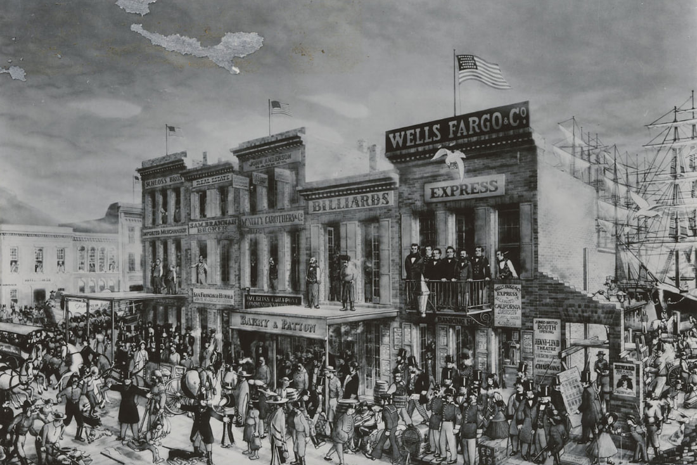 Chinese immigrants were welcomed in San Francisco during the Gold Rush. Montgomery Street in the 1860s. (California Historical Society)
San Francisco: Chinese Capital of Gold Mountain
In the earliest years of the Gold Rush, nativistic sentiment had not hardened against Chinese immigrants. Imports of luxury goods like silk shawls and fans, and much needed construction materials, including complete houses made of brick, and skilled workmen like blacksmiths and carpenters made available for indentured contracts, were welcome arrivals on the docks of San Francisco.(2) In sharp contrast to what would be printed two decades later, the amity towards the earliest Chinese immigrants was remarkable.: It seems a little singular to an "outside barbarian," to see the Celestials in our streets carrying on various branches of industry. We have a great deal of respect for the Chinese, with their nankeens and their pig tails, and are pleased to find them of so quiet, peacable, and industrious dispositions. We know of no class of citizens who conduct themselves more becomingly and are gratified to know that they meet with success. Several of the Chinese who have kept Restaurants, were burned out at the last fire, but they have again commenced operations. In passing down Jackson street yesterday we saw our celestial friend Ahi, industriously employed in putting up a spacious frame covered with blue nankeen. He was surrounded by a crowd of Chinamen all working away, sawing, planing, hammering, nailing, and busying themselves in the most delightful manner, all in their native costume. (3) … Of interest to us and to the Chinese residents, than whom there is not a more worthy, inoffensive, industrious and respectable class of citizens in California. We never look upon them without admiration for their amiable qualities and the affection they evince for each other…(4) The Chinese community in Northern California, based in San Francisco, organized early and reflected the hierarchical social structure in their home country. The earliest immigrants from Guangdong Province formed the Kong Chow (Pearl River Delta) Association. As diversity of interest and origin emerged in the 1850s, that association split into what later became known as the Chinese Six Companies or the Chinese Consolidated Benevolent Association. These companies acted as ambassadors, labor representatives, protection, policing, and often operated through Caucasian attorneys or representatives.(5) 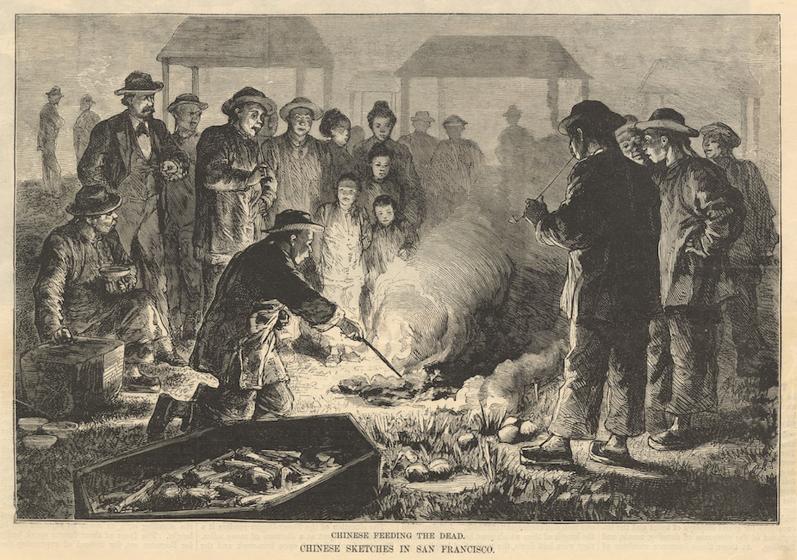 "Chinese Feeding the Dead", Illustration from Harper's Magazine January 25, 1879 (California State Library)
The "Chinese Question" in Sonoma County
As in other parts of California and the West, Sonoma County residents split on the "Chinese Question". Chinese workers began to move into the area from the northern gold mines in the 1850s. They worked as servants or as day laborers and also founded businesses, most notably laundries. By the late 1860s larger groups of single Chinese men arrived to build roads, rock walls, and bridges. Many more came to work on the railroad, the first of which was completed in the early 1870s. (see article this site: Iron Horse) The earliest documented use of large numbers of Chinese laborers in Sonoma County is the building of Buena Vista Winery in Sonoma by Hungarian immigrant Agoston Haraszthy (1812–1869). Among his multiple projects in the Americas, Haraszthy purchased property in Sonoma in 1857 and contracted at least 150 Chinese workers from a labor broker, Ho Po, in San Francisco. The Chinese planted the vineyards and built the structures on what would become incorporated as the Buena Vista Agricultural Society in 1863. Unfortunately the project, run by Harazthy’s son Attila in his absence, was bankrupt by 1867. It continued under other ownership and at least for a time, retained its Chinese workers. In the Gubernatorial election the same year, Haraszthy championed the use of Chinese labor in California, supporting a proposed Fourteenth Amendment guaranteeing "equal protection under the law" and a Fifteenth Amendment, extending the right of former slaves to vote. He died in Nicaragua in 1869 while working on other ambitious projects.(5a) One early account of a triracial fist fight in Petaluma in August 1860 is typical of the bias that would greatly increase over time. A Chinese businessman, Wal Lee, (this may be Jo Wah Lee) who was establishing a laundry in a shanty south of town, had previously roomed with Joe, a "Spaniard", and Jack, a "negro". When the trio broke up as housemates there was disagreement about the ownership of a cat, which Joe killed, apparently out of spite, sparking a public fist fight. In the telling, Wal Lee is made the aggressor, and although all three were arrested, Wal Lee was the only one punished, receiving a fine of $25, equivalent to about $800 in 2021.(6) As time passed the Chinese became even more suspect to Caucasians, reaching a point by 1875, as the article below illustrates, when every crime, large or small, was attributed without evidence to the closest Chinese resident, simply because he was Chinese. Dr. and Mrs. Hendley place 1.5 miles from Santa Rosa robbed of $500 worth of stuff; There was no one on the premises but a Chinese servant, and strong suspicions point to this race as the perpetrator of the dastardly outrage.(7) Fear of losing working-class wages panicked the Caucasian population that had only recently settled here themselves. There is evidence of nativist terror at the thought of a dominant Asian culture and religion in the county by 1866, when a Healdsburg editor reprinted a Sacrament Bee editorial for his own readers: …The department of labor is in a very uncertain condition, owing to various causes, prominent among which is the competition of Asiatics…If our workshops, our woolen mills, our factories, our farms, our mines and our railroads are to be overstocked with this material, driving out, gradually, free white labor, we would rather have no workshops, factories, railroads or farms…It is found so profitable to employ coolie labor, that, as long as we have no legislative action looking to that end, the evil must continue and indefinitely increase. The discharge of nearly all the white laborers by several railroad companies and the employment of none but Chinese in their place, shows what may be expected if something is not quickly done…nearly all white labor, except, perhaps, the more exalted branches, will be expelled, a few wealthy monopolists, answering to the description of the by-gone Southern planter, will control all the factories, plantations, mines and railroads, and there will be, virtually, a reproduction of the "glorious patriarchal system” of the South…The Christian falls back before the barbarian; the white man yields before the superior numbers of the Mongolian. Apparently it is a new contest between Christianity and Paganism, in which Paganism bids fair to win…(8) Nativist Hysteria
Although the census did not count every Chinese resident of Sonoma County, it is important to realize that at the time the editorial above was printed, there were between 51 (1860) and 500 (1870) Chinese living in the entire county, out of total populations of 11,582 and 19,819 respectively. Even though there may have been a few more transient laborers or residents in uncounted rural camps, there were still only 12 Chinese listed as Healdsburg residents in 1870.(9) The anxiety about being outnumbered far outdistanced the reality and would soon evolve into nativist hysteria in Sonoma County. Some progressive Republican newspaper editors like John B. Fitch of Healdsburg's Russian River Flag, asked a perfectly reasonable question about the enfranchisement of the Chinese in the post-Civil War era: If negroes should be accorded the right to vote, why should we not extend the franchise to the Chinese of whom there is already a large population in this country? (10) Remember at this time the Republican party was progressive, the "party of Lincoln." Such liberal thinking was more than counterweighted by irrational and emotional appeals to uphold "Democracy", as in this 1869 Sonoma Democrat exhortation by M. A. Peabody: Democracy, with her broad and liberal principles emblazoned on her spotless shield, has taken the field against the black knight of fanaticism, the champion of mongrel government, military despotism, negro equality, and Chinese suffrage. There can be no spectators in this fight. All must be combatants, and "those who are not for us are against us!” Fall in, Democrats! (11) While most county editors condemned the radical violence of some in the growing Anti-Chinese movement, the media’s characterization of Chinese nationals in 1867 contrasts starkly with the sympathetic descriptions of 1849 described previously: …A very short residence among the Chinese is sufficient to show that their virtue is entirely external; their public morality is but a mask worn over the corruption of their manners. We will take care not to lift the unclean veil that hides the putrefaction; the leprosy of vice has spread so completely through this skeptical society, that the varnish of modesty with which it is covered is continually falling off and exposing the hideous wounds which are eating away the vitals of this unbelieving people The ravages of pauperism, it may well be supposed, must be terrible in a society in which gambling, drunkenness and libertinism are largely developed. To this pauperism especially is to be ascribed the monstrous crime of infanticide. so common in China. [Millions of infants perish in the rivers, or in the jaws of beasts.— M. Delaplace]…(12) Reports of attacks on the relatively few Chinese living in Sonoma County begin as early as 1869. Initially descriptions are vague and neither the victims nor perpetrators are named. In Healdsburg we learn that that one of the aggressors in "the Chinese outrage"—a common euphemism for the physical attacks and vandalism rained upon the Chinese—was in jail, the other three still at large. In the town of Bloomfield in western Sonoma County we learn that four white men entered two Chinese camps outside of town and robbed them of $100 and two nights later visited two other camps west of Bloomfield and stole $200. In 2021 dollars that would be a robbery approaching $6,000, and this in an era when Chinese field laborers made no more than a dollar per day. No arrests were made. This early report also documents that there were at least four Chinese camps on the outskirts of Bloomfield by 1869.(13) In September 1870 an incident on Charles Alexander's ranch in Alexander Valley east of Healdsburg was described by a correspondent: …I am informed that a lot of Chinamen employed by Mr. Charles Alexander in drying fruit, were attacked, stoned and driven from their lodgings in the fruit house, on last Saturday night by a crowd of ruffians. They routed the Chinamen who were asleep and made them leave and then took their blankets…(14) The increasing Chinese population in Cloverdale sparked the formation of a chapter of the Ku Klux Klan in January 1871. Although the report is intended to be humorous, the result for at least two Chinese residents was not: …Some two weeks since, there appeared on the scene an individual remarkable for the extreme seediness of his apparel and the shocking badness of his hat…It was soon found, however, that the seediness of the dress of the Great Unknown was assumed as a badge of his calling, which was to plant the seeds of a new secret Order, which was to sprout and grow up in all his footsteps…The Unknown was soon seen going the rounds of the various liars in town, inviting all to drink to the health of the Champion of American Liberty, the illustrious Brick Pomeroy… Many Democrats, from far and near therefore began to gather…The real purposes of a secret Order, are, of course, unknown, except to the initiated. “By their fruits ye shall know them.” The ostensible object of this one, which was dubbed, “The Independent Order of White Men,” was to prevent the daughters of white men from marrying “niggers,” to drive the Mongolian hordes from our bosom, sir, to put the government of this country in the hands of white men, sir—the aforesaid White Men, I suppose—to give every Democrat a fat office, and make the Republicans pay all the taxes. Each applicant for membership was required to bind himself not to employ any laborers of any inferior race, black or yellow, Negroes, Chinese or Indians, and to pay ten dollars into the treasury, that is, into the bottomless pockets of the Great Unknown, and that is, into the various saloons of the town. Results—1st. Largely increased consumption of whiskey; 2d. The expulsion from the town of sundry moon-eyed celestials, whose tails stood out straight behind them like pump-handles, with speed and fright. It came about in this wise: The gallant Knights who were selected by lot for this dangerous but glorious service, reputed, with hearts full of patriotic idol and “Dutch courage,” at the hour of deepest darkness, to the domicile of the obnoxious foreigners. Not a sound was heard, not even the melodious gabble of a goose, as they threw their skillful lassoes over the lofty chimney. One grand charge, and—not it, but they, kissed their mother earth. Repairing their saddles, with dreadful maledictions upon the whole pig-tailed race, they at length succeeded, and that chimney and one side of the abode of the dreaded celestials were cast to the earth. Ah Wing and Ah Wung took up their line of march for a more healthful climate, leaving buckets, baskets, clothes-lines, etc., behind them as a result. All the elegant young gentlemen who “practice behind the bar” in Cloverdale, are at a loss for clean linen on which to display their gorgeous diamond pins; for the price of washing has gone up so high that they cannot afford a clean shirt oftener than once in two weeks…(15) Despite such horrendous incidents, Chinese continued to find employment on the railroads and the local mercury mines, where mercury poisoning afflicted many. They also found employment in local agriculture and wineries, or as domestic servants. Some Chinese managed to start their own shops and businesses, especially laundries. Often the Chinese helped with road and dam building, hard labor that whites avoided. In December 1874 about 150 Chinese laborers and only 15 Caucasians were preparing to dam Bush and Bihler sloughs in Napa and Sonoma Counties.(16) Two hundred graders, about half of whom were Chinese, and 25 tracklayers were at work laying track for the narrow-gauge railway to Guerneville in September 1875.(17) We learn that the Chinese tracklayers’ camps were segregated from the white workers’ camps.(18) The lumber camps began to hire Chinese laborers and Chinese cooks in the same era.(19) In November 1878 one newspaper estimated that between 400 and 500 Chinese were employed digging potatoes in western Sonoma and Marin counties. They made a dollar a day and boarded themselves in their own camps, saving their employer the trouble and expense of housing them.(20) The Importance of a Name
There is a turning point for each Sonoma County community and news publication when it begins to use—or at least attempts to use—the individual names of its Chinese businessmen and residents instead of the terms "Chinaman," "John Chinaman," "Celestial," "Mongolian," or "Heathen." The 1860 census lists no fewer than 17 Sonoma County residents named "John Chinaman." That single difference, naming the Chinese as individuals, was the first signpost in a long, rutted, circuitous path to tolerance, that often doubled back on itself. That lonely signpost can be seen in Healdsburg in July 1870 when John C. Howell, editor of the Russian River Flag, reported the opening of a new wash house run by Sang Lee on Center Street. This Caucasian poignantly struggles to differentiate individuals and inevitably thereby begins to pity their plight: …Sang Lee, has opened a new laundry, east of the Picture Gallery, and tells the people so in an ad. which will be found in another column. This is not the Chinaman that was wantonly maltreated some time since by a young ruffian, but is his cousin, he tells us, and he is equally inoffensive and well behaved. A little over a year later that same wash house on Center Street in Healdsburg was robbed of $60.(21) Editor Howell was still sympathetic towards the local Chinese population in 1873. Although unbearably condescending by modern standards, these 1870s Russian River Flag reports constitute the closest thing to tolerance in Sonoma County in that era. An Intelligent Chinaman.— Cum Yuk, who is "boss" washwoman at the Hop Sing wash house in this place, is progressing quite rapidly in mastering the English language. He now reads quite intelligently and writes a fair hand which is more than many editors and lawyers can do. He expects to send to China in the course of a year or so for his lady love, when Healdsburg will enjoy the novelty of a Chinese wedding. Cum Yuk is courteous and gentlemanly, and is rapidly adopting American ideas of living.(22) Howell still fails to master the complexities of Chinese business associations, family ties, and traditions: …And now comes Com Yuk, Esq., a foreigner by profession, saying he wants a "card in 'e Flag." After being duly questioned and cross-questioned he says in substance, if we have understood him, that the change of the wash house sign from "Hop Sing" to "Cum Yuk" is not to denote a change of proprietorship; that the old sign "Hop Sing" was meant to tell the company to which Mr. Yuk belonged. and that the board now hanging out is to inform all whom it may concern that the boss of the ranch delights in the name of "Cum Yuk." Now, after all, we may not have understood this heathen…But one thing we did comprehend, at any rate, and that was that the Chinaman insisted on having a "card in 'e FLAG” and said he would pay the price for it —two bits a line.(23) False reports of infectious diseases in the Chinese sections of Santa Rosa and other towns fanned the flames of public sentiment against the Chinese in the 1870s. A silly rumor was circulated Friday morning that in a Chinese wash house near the iron bridge, there was a case of small pox. Marshal White and Mayor Neblett at once examined all the Chinese houses in the city, and found not the least foundation for such a report.(24) The Chinese in this city, by the way, are threatened with a new visitation. The Health Officer has made up his mind that the present small-pox epidemic is due, to a great extent, to the fact that the Chinese obstinately refuse to report the many cases occurring among themselves, and throw every obstacle in the way of ascertaining the real state of affairs in their crowded and filthy quarter. The Board of Health has therefore decided to make a vigorous inroad on their dens and alleys, lay all their noisomeness and nastiness open to the light of day, and fumigate, disinfect and purify all Chinatown, the police to back them up if necessary. There are plenty of people here, and probably some of the Chinaman’s "Democrats" are among them, who think that the only way to regenerate the Chinese quarter is by a baptism of fire, and a careful inspection of that delectable precinct goes far to convince the unprejudiced observer that such a scheme of salvation is pretty good orthodox doctrine.(25)
Rocking the Chinese
The stoning of Chinese individuals, their homes, and businesses became so common in the 1870s and 1880s that it had its own euphemism—rocking. Often referred to at first almost affectionately as "Hoodlums," the offenders were most often young men or boys.(26) Healdsburg’s editor Howell lamented in October 1873: Hoodlumism Last Sunday, while waiting at the railroad depot to see a friend off on the down train, we overheard the conversation and watched the actions of four hoodlums belonging to this town. The largest of them, who was about eighteen years of age, said to the youngest, “Go and hit him.” Hearing this we watched their movements. They went inside the door of the ticket office. A Chinese boy stood outside. The youngest of the hoodlums, a boy not more than ten years of age, incited by his companions, slapped the inoffensive Chinese boy four or five times in the face. Such scenes as this are everyday occurrence throughout the State, and are a disgrace to our civilization. Only two weeks later the same editor reported: A "MEAN TRICK." A white ruffian pushed a Chinaman off the platform of a street car. The poor Chinaman fell under the wheel and had a leg crushed from the foot to the knee. The Alta, calls this a "mean trick." What would it be called if the Heathen had pushed the Christian off the car? And two months after that: More Hoodlumism. Thanksgiving Day, while at the railroad depot, we saw a crowd of ruffianly boys pelt an inoffensive Chinaman with every available missile they could lay their hands on. It is very discreditable to Healdsburg boys to be guilty of such cowardly and disgraceful conduct. The most uncivilized barbarians could do no worse to a stranger visiting their country. If these hoodlums happened to be in Asia or Africa, they would not like to be set upon and maltreated by a crowd of natives. Yet they assail Chinamen here whenever they can do so with impunity. If they have any sense of right and wrong it seems to be overcome by innate brutality.(27) In Santa Rosa at the same time there were reports of young men ringing bells and screaming at Chinese and throwing missiles through their windows.(28) Dr. William Shipley, Healdsburg's medical doctor and later county memoirist, described the tactics used by a "certain element' in Healdsburg to harass the Chinese: …Rocks were thrown at Chinamen on the streets, sometimes when delivering clothes they would be assaulted and the clean clothes scattered in the dirt; of course the poor Chinaman would have to take them back and do them all over again or pay for those damaged beyond repair. At other times gangs of young men would collect a flock of ancient eggs, rotten vegetables or some other obnoxious substance, and at night would gather in front of a laundry, have one of their number rap on the door, run out of range so that when the Chinaman opened the door the rest of the mob would give him a volley of garbage, much of which would get inside and foul up everything it came in contact with.(29) Despite the age of the apprentice racists, such pranks often had serious consequences. Yet during the 1870s the culprits were seldom punished, as shown in this incident in Santa Rosa in May 1878: Serious Affray.—We learn that Tuesday a Chinaman who was obtaining water from the creek, was seriously annoyed by a number of boys who muddied the water and played other pranks of an unpleasant nature, until John’s queue began to unwind, and he began demonstrations toward the boys which caused a stampede on their part. They rallied, however, and came back with a shower of stones that brought the Celestial body down to earth suddenly, one stone striking him in the breast and the other in the head, producing serious wounds. And in the same edition: The four boys who assaulted the Chinaman Tuesday last, were arrested Wednesday morning and taken before Esquire Brown for a hearing—two of them were released, and the case of the other two was taken under advisement by the Court until this morning, when they were discharged.(30) The overtly racist Santa Rosa newspaper editor, publisher, and later Secretary of State and Congressman, Thomas L. Thompson (discussed later in this article) still refused to call the victim anything but "John Chinaman" and makes jokes about the serious injuries he sustained. Later that same year Thompson reported: The genus hoodlum in Sonoma seems not to be quite extinct. A number of them recently caught an inoffensive Chinaman and beat him nearly to death. The Chinaman’s cries attracted the attention of some passers-by, but before they had time to come up the ruffians escaped. (31) Murder and Suicide The violence against the Chinese was not confined to young hoodlums. Many instances are recorded of Chinese men being shot or injured under ill-defined conditions by drunken or angry adult Caucasians who later escaped consequences. These reports necessarily lack balance because of a language barrier, preventing the Chinese from explaining, and leaving the media to sort out events. The following incidents, the first in May 1876, the second in December 1877, are typical. Suicide. Notice was given on Wednesday last to Justice Blume, of Freestone, that a Chinaman, near Gifford’s Mill, had committed suicide by hanging himself. On Thursday morning an inquest was held, and all the information which could be obtained was that his name was Ah Hong, and about 40 years of age. No evidence whatever could be found, among about 20 Chinamen only one could be found who understood any English and his evidence amounted to the usual China testimony, "me no sabe." In consequence the jury brought in the verdict that the deceased came to his death by hanging himself.(32) Chinaman Injured A Chinaman was struck on the head and rendered insensible on Thursday. There are several reports in relation to the case but the one appearing the most plausible is about as follows: A boy passing by the Chinese quarters on Second street threw a stone at the house, when two Chinamen ran out and began to beat him, one with his fists and the other with a club, and were getting the best of it when a white man passing struck one of the Chinamen with a piece of timber, fracturing his skull and rendering him insensible. A warrant for John Doe was issued by Justice McGee, but no arrests have been made. It is thought that the injured Chinaman will die. A few days later we learn: A Pitiful Sight.— On Thursday evening we went to where that injured Chinamen was lying, and found him stretched upon a wooden litter, wrapped In a blue blanket, wholly insensible and heaving occasionally a deep sigh indicative of the pressure of the fractured skull bone upon the brain, and also of his approaching death. He is in a miserable wooden shanty on Second street and is attended by a Chinese doctor, whose course of treatment is wholly incomprehensible to any one except the school of Mongolian physicians to which he belongs. (33) Reports of "suicide" share an uncomfortable proximity to reports of violence. These two items appeared close together in August 1878: …Squire Bloom [Blume], of Freestone, informs us that a Chinaman committed suicide at Howard’s Station Monday night, by cutting his throat. No surgeon was at hand to dress the wound, and it is believed death ensued from the bungling manner in which the gash was sewed up by an inexperienced hand… …A row between a Chinaman and some boys took place last Sunday which resulted in the Chinaman becoming severely injured. A small boy began to interfere in some manner with the Chinaman’s horse, so he attempted to punish him. This attracted the attention of a young man who interfered and the Chinaman turned upon him and chased him up Third Street and across the Plaza. The young man ran toward a group of men in hopes that they would interfere, but as they did not he began to act on the defensive and pelted the celestial, injuring him severely in the neck.(34) By the late 1870s even race-baiting editor Thompson seemed to be losing patience with the repeated violence. Those who attacked the Chinese without provocation did no jail time, but some may see the evolution of empathy as the courts began at least to fine the attackers. Reports like these, still making light of serious injuries, became common: Severely Beaten—A Chinaman is reported to have been severely beaten by two young white men at Sebastopol one day this week. It seems John did not obey the word of command to get out of the way quick enough to suit the hot blood of the youngsters, and they gave him a beating.(35) Lively Scrimmage On Saturday afternoon, about 4 o’clock, a furious blowing of police signals on the southeast corner of the [Santa Rosa] Plaza caused a rush in that direction. We went with the crowd and found a man named Swan indulging in a savage encounter with a Chinaman. Marshal Beckner was promptly on hand and arrested both parties, it subsequently appearing that the Caucasian was the attacking party, the Chinaman was released and the white man held to answer. He plead guilty on Monday morning and paid his fine.(36) When they were convicted of alleged crimes, usually petty theft or opium smoking, the Chinese often received harsh sentences. The following report from Santa Rosa in 1881 is typical: …The Chinaman who tried to hang himself lately in our jail was sentenced to 14 years in San Quentin for burglary. Another Chinaman was sent up for 13 years for the same offense, by Judge Pressley.—Santa Rosa -"Republican."(37) 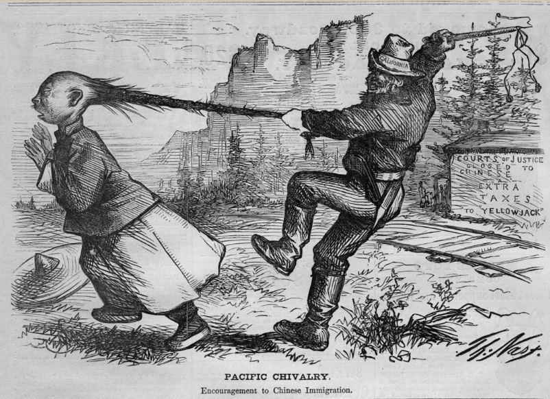 This cartoon by German immigrant Thomas Nast appeared in Harper's Magazine in 1869.
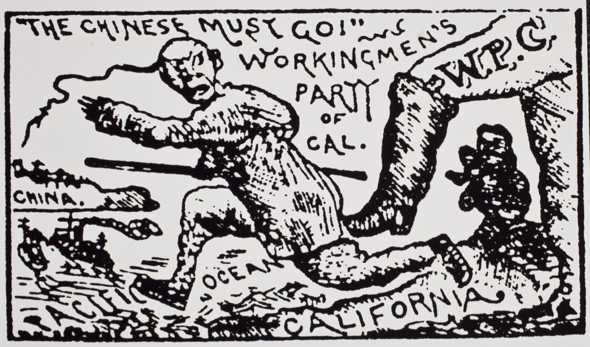 Graphic from Guerneville, Sonoma County voting slate for the Workingmen's Party, 1879. (Sonoma County Library)
The Second Street Gang
In June of 1879 a case of local hoodlumism directed at the Chinese ascended to a higher level of criminality. What shocked the community so greatly was not only the senseless and heinous crimes involved, called one of the most diabolical plots that has ever disgraced the annals of civilized life, including theft and multiple attempts of arson, but the identity of the perpetrators. Said one account: …The rumors that have been afloat were so astounding and so extravagant, that most of us deemed them wholly fictitious, especially as those implicated were mostly young men, and sons of some of our most worthy and estimable citizens.(38) A classic case illustrating the banality of evil, this series of crimes was initiated by a group of young, aimless, underemployed Caucasian men who hung around the Workingmen’s Party Hall on Second Street in Santa Rosa. Fueled by a national depression in 1873, the Workingman's Party, led by Irish immigrant Denis Kearney, gained prominence in California by the late 1870s. Along with the fight for a shorter working day and higher wages, a major plank of this party's platform called for more stringent federal and state laws to exclude the Chinese.The Workingmen’s Party appeared in Sonoma County about 1878, sounding the endlessly repeated motto, "The Chinese Must Go!" In March of 1879 these men began their frolic by rocking the houses of the Chinese on Second Street, when the idea came upon them to burn down the nearby Lachmann & Jacobi Winery on Donahue Street, between West 8th and 9th Streets. According to later testimony given by John C. Staley: …The first time the matter was brought up was on Second street, [Charles] Jones, Dick Hodgson and l had been going through (stoning) a Chinese house, and the officers had got after us and we had run away from them, up the street to the next house from the corner, do not remember who proposed it, but all agreed that it would be a good thing, and would get the Chinamen out of the way. The next day the matter was brought up again, this was about two weeks before the [Lachmann & Jacobi Winery] fire. Jones, Hodgson and I were the only ones present, and Jones said, ‘Go ahead and do it.’ Did not say how it was to be done, but said it was full of Chinamen, I have seen six there myself… Jones had one plan and I another, and we talked about them. Jones said, ‘It would be a good thing to get the Chinamen out.’ I brought up the plan of burning hotels, etc. Jones said, ‘Burn them out, they don’t allow a white man around, they are a rich company in San Francisco, and can stand it.’(39) The arsonists had ingenious methods, boring holes in walls and cutting out boards, and inserting candles surrounded by oil soaked rags inside. They then replaced the board to hide the light of the flames and reached in to light the candle through the hole. They stole the oil from the nearby North Methodist Church, which apparently kept an open-door policy. After their first caper the men hung out at the Workingmen’s Hall where a speaker was interrupted after the fire alarm sounded and the Workingmen audience rushed out to attend to the fire. Not having fully achieved their ends the first time, John Staley described his second arson attempt at the Lachman & Jacobi Winery: …I burned it on the night of March 2nd, 1879. Went there alone, took out a window on the west side of the cooper shop, crawled in, strewed the shavings over the floor, set fire to them, crawled out and got away. Jones knew the Sonoma House and Ludwig’s lumber yard were to be burned; talked with him the day the attempt was made, the day before that, and about a week before. Jones said he had been at work for Ludwig, and that he would give him no more, and he ought to be burned out as he monopolized the whole town. The time for setting this last fire was set for the Thursday before it came off; don't know why it was put off. I took two cigar boxes and bored holes through them so as to admit air, filled them with candle wicks and coal oil to set them on fire with. I set the Sonoma House [hotel] on fire first, and then went to Ludwig’s; met Jones in front of Evan’s book store, and he went with me to the shoe store on the corner. I left him there and went into the shop, set the box under a pile of window shutters, lit it and came away. We went up to [where] the Workingmen’s Hall (used to be) and waited there until we saw a light In the shop, when Jones said, “It is all gone to h—l, and l am glad of it."… The defense drew forth the fact that the witness and Jones talked about the burning of the winery in the first instance twelve times...The substance of each conversation was, that it would be a good thing as people would get scared and discharge their Chinamen, we would liven up the town, have a good time, etc., and in one or two instances Jones cautioned them against being caught, and Hodgson said, “Pone, you and I can do it.” The conversations were held in various parts of the town, some on the sidewalk in front of Evans’ bookstore, some at the Hall of Records, others at the Post office, or at the Depot, etc., and the main reason for the act was “That the Chinese must go.”(40) 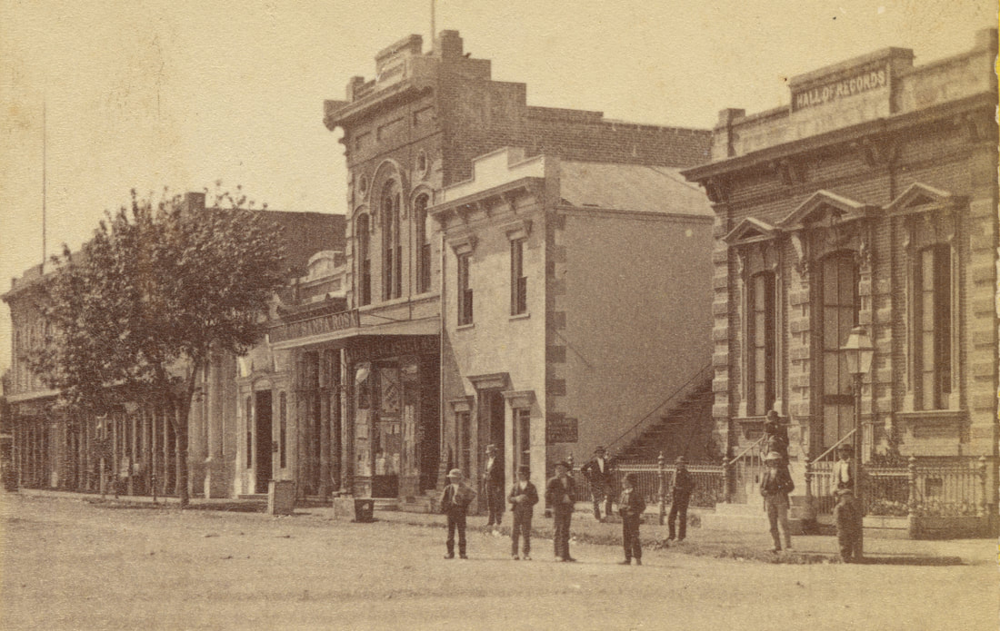 One of the boys loitering on Santa Rosa's Fourth Street in front of the Hall of Records (at far right) in 1875 could have grown up to become an anti-Chinese arsonist by 1879. Downing, Rea & Rauscher photo (Sonoma County Library)
The personal grudges of these men seemed to play a larger role than their hatred of the Chinese. As in so many modern cases of racial violence, the perpetrators in 1879 were from the underemployed working class. According to Charles B. Hatton, referring to arsonist John Staley:
…His object in burning the winery, was because he thought it would be re-built with brick, and he was at work in the brick-yard, it would make times lively, and he would have a better job. He said that John Staley, also set fire to the Sonoma House last summer, and his object was the same, to make times lively. On the same evening Welch said that Staley set fire to Ludwig's lumber-yard because he was down on Ludwig, because he said Ludwig cheated him out of $25, that he had earned by night work. Considering the arsonists’ persistence, it is a wonder that the whole district was not engulfed in flames. Fortunately passing citizens managed to put out the Sonoma House and Ludwig’s Lumber yard fires. The major loss was the Lachmann & Jacobi Winery, which by the time of the second fire had been sold to Isaac DeTurk. The next year DeTurk would build the massive brick structure that housed his winery on Donahue Street, between West 8th an Boyce Streets, part of which still stands today.(41) Santa Rosa was not the only Sonoma County town plagued by suspicious fires. In January 1877 a fire in a Chinese wash house in Petaluma destroyed it completely along with the building housing it. Yet the fire department was able to stop the conflagration from spreading to other buildings.(42) In May of that same year the citizens on the south end of Main Street in Sebastopol were startled from their slumbers by the alarm of fire issuing from a Chinese wash house. By the timely assistance of J. W. Campbell the fire was extinguished without doing much damage.(43) A huge conflagration involving the entire block on the north side of the Healdsburg Plaza in Healdsburg in 1880 also burned two Chinese wash houses, but the main fire demolished the stores of some leading citizens as well. Although the Chinese may not have been the target here, somehow it was determined that a defective flu in one of the Chinese wash houses was to blame for the entire event, although no evidence was presented.(44) Santa Rosa’s racist hoodlums had a large territory, persecuting the Chinese in other Sonoma County towns. In February 1883: …the Chinese who hold forth at Sebastopol had made arrangements to carry on their New Year festivities on quite an elaborate scale, at least, so far as the burning of fire-crackers, bombs, etc., was concerned. They erected poles in the street, to which long strings of the crackers were attached, any number of packs being strung together. Just as the performances were commencing a half dozen of our young Santa Rosa Comanches broke into the town on horseback, and, taking in the situation of affairs at a glance, immediately started up their fiery untamed steeds and tore through the street at a dead run, snatching at the fire-crackers as they passed, and fairly loading themselves down with the spoils. There was any amount of wild expostulations and profanity in heathen jargon, but it was of no avail…(45) 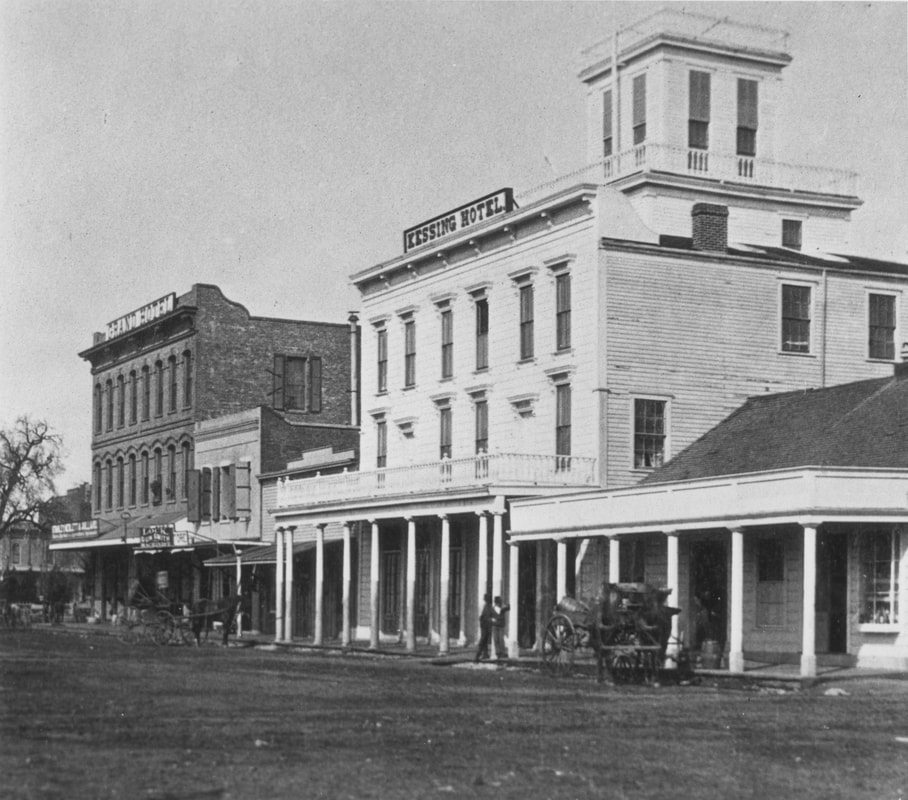 Anti-Chinese arsonist John Staley made an impressive effort to burn down the Sonoma House hotel and Ludwig's Lumber Yard in Santa Rosa "to make times lively." He succeeded in burning down a winery. A passing citizen saved the hotel, seen here at center in 1876, when it was named the Kessing Hotel, located on Main Street (now Santa Rosa Ave.) between Second and Third Streets. (Sonoma County Library)
Chinese Competition
Although the general population did not adopt the extreme tactics of the Second Street Gang to drive the Chinese out, they were very aware of the small but growing Chinese population and the extent of their industrious inroads into the Sonoma County economy. Constant editorials in every county newspaper in almost every issue kept the Chinese Question front and center. Outright race baiters like Santa Rosa’s Thomas Larkin Thompson, publisher of the Sonoma Democrat and Bloomfield’s Tom Gregory wrote editorials or letters to the editor almost continuously in this era. They used the most base disparagement of the Chinese as a leprous, depraved, servile, Pagan, thieving, and murderous population. That type of prejudice requires little analysis, but it is disconcerting that Gregory later authored a history of Sonoma County that still serves as a seminal work for regional historians. Thomas L. Thompson, in particular, made his career through his anti-Chinese campaign, serving as delegate to the Democratic National Convention in 1880 and 1892, was California Secretary of State (1883–1887), and a United States Congressman (1887–1889).(46) An example of his vicious, witless editorial comments, this one made in February 1879: —The best way to kill off the Chinese is to teach them how to aid kitchen fires with kerosene oil cans. (47) In retrospect it is more difficult to explain the concurrence of educated progressive intellectuals of that era in supporting the exclusion of the Chinese as a race. One good example is found in the town of Healdsburg, where its Republican newspaper, the Russian River Flag, had previously tended to defend their small Chinese population. In 1880 editor Leslie A. Jordon made the quintessential intellectual rationale for Chinese exclusion, an argument readers may certainly recognize in our current politics, and so I reproduce much of it here. The Still Vitally Important Question In a former issue we alluded to the Chinese in our midst as one of our standing evils, and promised a few suggestions. In this article we will deal with the subject practically, giving some of the results of our observation of the practical working of this evil. Fifteen years ago we first came to San Francisco from a busy manufacturing town in New England. At that time the slipper trade of San Francisco was in the hands of the Jews largely; they employed cheap Chinese labor, with labor being so high and so free they could not use it and compete with the improved machinery and cheaper labor of the larger and better organized factories in the Eastern states. At first this plan worked all right for the employed and the employer, but what was the outcome. It took Mr. Chinaman about three years to learn the trade, and as soon as he had mastered it he started in business for himself, and in five years from that time he was selling goods to his former employer as cheap as he could manufacture them himself. There is no disputing the fact that these Chinese possess all the elements of success; they have the patience, perseverance and the capital, and where this capital is wanting they form co-operative organizations, and make them a success beyond anything we find among white associations for similar objects. These facts constitute one of the great dangers from an excess of Chinese immigration. There is nothing in life we may not gather some lesson from if we will, and shall we not from the Chinaman. If the young men, and some older ones of our communities, would imitate the patience, industry, and one half the economy of the Chinaman, and go to work instead of walking our streets idly and aimlessly, it would be better for them, and the future prospect for our State would be more hopeful. We are not here asking that our work people shall "live like a Chinaman" by any means…Again the same plan was pursued by some of the boot and shoe factories of San Francisco, and with precisely similar results. The Chinaman soon learned the art of manufacturing ladies’ and misses’ shoes from his white employer, and in a short time a score of shoe factories sprung into life in San Francisco as if by magic, conducted by Chinamen and sustained by their capital. The largest manufacturer and importer of boots and shoes in San Francisco, he who first taught the Chinaman the trade, told the writer a few years ago that their house purchased annually of Chinese shoe firms $75,000 of ladies’ and misses’ shoes. Said he, ‘‘they can make the cheaper article and deliver them to us at less cost than we can manufacture them ourselves, and a part of our help is Chinese.” Then there is another considerable industry in San Francisco; manufacturing the overalls and jumpers that are so universally worn by us in all our farming and mining districts [he is referring to Levi-Strauss "jeans"]. White men first started that industry, employed Chinese cheap labor and with the same result as has been experienced in the other cases cited…This experimenting with Chinese cheap labor has gone on until we find this people engaged in almost every branch of trade and industry on this coast, to the exclusion of course of that number of Europeans. If all could be said of them that they be of that class of immigrants arriving by the tens of thousands annually in our country, coming from countries blessed with a Christian civilization similar to our own, and who come here to settle among us, make for themselves comfortable, homes, obey our laws, support oar schools, in short to become an integral part of our population; then we would welcome more of them to our shores, for there is nothing California needs so much as an increase in her industrial population to develop her great natural resources. Indeed we must have it, if our factories are to be multiplied, for we must have an army of thrifty producers and consumers to take the products of our factories. But what are the real facts in the case. It is true we get the fruit of the Chinaman’s cheap labor in cheaper living, and when he returns to China he cannot altogether carry the product of that labor back with him; in so far as he helps to develop our industries and our natural resources he leaves the fruit of that labor behind him; still he takes our money to that country that seems destined in the future largely to furnish the rest of the world with cheap labor, and to absorb the money realized from it. A very large percentage of the Chinese laborers who come here, come not only under a contract system unknown and unrecognized by our laws, but they come without families, and with no intention of settling among us. They bring with them their peculiar civilization, habits of life, stay long enough to secure our money and a little of it goes a great ways in their country when they return home to tell the story of this new Eldorado to the teeming millions of China, many of them living in a state of poverty and wretchedness unknown and unrealized on this continent. And just here lies another danger; we cannot afford to recruit our population from the dregs of the older civilizations; if we do our civilization will disintegrate, and we shall perish as a Republic.(48) Modern politically conservative thought might substitute immigrants from Mexico or Southeast Asia, but the reasoning remains essentially the same. By the late 1870s there was a united, bipartisan front against Chinese immigrants in Sonoma County, and those who employed them felt the pressure. In October 1876 the managers of the Santa Rosa Waterworks were pressured to fire Chinese workers and hire white.(49) In February 1880 it was reported that William T. Coleman of Coleman Valley discharged all of the Chinese in his employ, intending to replace them with "white men."(50) Later that spring the Santa Rosa City Trustees considered starting a Farmers’ Market, whose sole aim was to help Santa Rosa citizens boycott the Chinese vegetable peddlers.(51) Dr. William Shipley described a Chinese vegetable peddler in Healdsburg: …From Jo Wah Lee's wash house a countryman named Ah Sing Lee conducted a fruit and vegetable business. He carried his wares about town in two large baskets suspended by a bamboo pole which he balanced over his shoulders. His loads would weigh between three and four hundred pounds and he dog trotted from customer to customer with ease and grace...a white man could not lift the load, for I have seen them try and fail, which greatly pleased Ah Sing...His Business prospered for he was honest, friendly and always appreciated a sale, no matter how small. He would usually have some small token for the children.(52) Starting as early as 1875 and continuing for decades, each attempt to establish a steam laundry by a Caucasian businessman in Sonoma County was heralded as welcome competition for the dominant Chinese laundries.(53) In the town of Sonoma in 1876, J. A, Poppe began improving his valuable property situated on the north side of the plaza, which he had leased for a number of years to some Chinese merchants for the purpose of introducing a Chinese hotel.(54) It is clear that Chinese entrepreneurs were making inroads, especially in localities where heavy labor was needed, as in laying railroad track or the lumber industry. By the mid-1870s Chinese had established wash houses and sold whisky at Dutch Bill Creek.(55) There was a Chinese store in Occidental, which was the center for Chinese along the narrow-guage railroad.(56) Healdsburg’s more protective attitude toward the small number of Chinese in their midst in the 1870s was in sharp contrast to other localities. But the mounting public pressure was evident. Russian River Flag editor Leslie Jordon filed the following reports in the summer of 1877: A stranger on our streets yesterday attracted some attention by talking loudly in favor of an uprising against the Chinese. He was, however, silenced by officer Patrick.(57) As a county historian I was pleased to discover that Healdsburg's famous squatter buster, city attorney, and political kingpin, L. A. Norton, was a courageous defender of the rights of the local Chinese. He could not be intimidated, even after receiving missives like the following: The Anti-Coolie Warning. Last Thursday Capt. L. A. Norton of this city received an anonymous postal card through the Healdsburg post-office bearing a date of the day before. It warned him that unless the Chinese renters were driven from his property within a week the building would be burned to the ground. The card also stated that those people who persisted in employing Chinese would certainly get hurt. The Captain at once offered $50 reward for the identities of the writer of the card, and immediately put a detective on his track. Any proceedings to remove the Chinese which are in violation of law and order are useless, for those who participate in them will be made to suffer, and if the author of that postal is caught the Captain will doubtless see that he is made an example of. At the same time this anonymous letter appeared in the Sonoma Democrat from Salt Point Township, which includes Timber Cove and Stewart’s Point: LETTER FROM THE COAST. Pole Mountain, Aug, 12, 1877. Editor Democrat :—I think you will be glad to know that the [Democratic] ticket gives almost universal satisfaction up here, so you may look for a rousing majority from old Salt Point in November. Not the least among the many things for which we have to be thankful, is the extreme scarcity of Chinamen and Republicans in our little community, and I am sorry to say that one of the latter has imported a gang of the former to this fair region. I have no desire to assail the motives of any one in his capacity as a private citizen, but I consider the introduction of Chinese labor into our canyons a public calamity—hence I execrate its author. All up and down the coast, like the low mutterings of distant thunder, one can hear curses, not loud, but exceedingly deep upon the head of the person who employs the accursed Coolies to the exclusion of numbers of white wood-choppers; but we are essentially a law abiding community, so I fear no violence…(58) In April 1878, the infamous Denis Kearney himself, founder of the anti-Chinese Workingmen’s Party, spoke in Healdsburg, and Col. L. A. Norton again was a target. "HEMP" - Last Wednesday night, after the Kearney meeting, at which a wordy altercation occurred between Kearney and Captain Norton, some party or parties procured a coil of “unwritten plank,” made a noose in one end, and hung it on the front door of the Captain’s office, where it yet remains for the particular edification of those who put it there. The Captain investigated the matter sufficiently to ascertain that the rope was procured by cutting some clothes lines at a Chinese wash-house. Whether it was meant as a threat or a joke deponent saith not.(59) Some Sonoma County towns were hard pressed to find that "Chinese Menace" in their community after reading so much about it, as this almost comical report describes: Windsor, Letter from "John Thomas" .. .We have no workingmen’s organization yet, although there is a winery and one Chinaman that need looking after.(60) In the town of Bodega this item appeared, dated July 19, 1878: Ed.. Democrat: A few days ago the wife of one of our merchants being compelled to do so, for the reason that there is no ready help to be had in this vicinity, employed a Chinaman for a day's labor, when, on the following morning a notice of warning was found posted upon her husband's store as follows, verbatim: "NoTice To the KowaLsky if you Hav THaT CHinaMan IN yoRe imPoy To Days From THis DaTe Look OUT For yore STore From, A, FrieND July 1878 WARNING (61) In 1882 newspapers began systematically calling out those who hired or might rent land to the Chinese. Russian River Flag editor Leslie Jordon reported that certain Chinese were trying to buy up some of our orchards. The Healdsburg editor fretted about the possibility that a Chinese cannery was about to be inaugurated.(62) Later that year he noted with satisfaction, There are about 25 Indians picking for Mr. Born, but not a Chinaman to be seen in any of the yards.(63) Even Sonoma Democrat editor Thomas Thompson had to defend himself against a claim that he secretly hired Chinese workers. Although he calls himself a radical Democrat and states: No man is or has been since the commencement of my editorial life more earnest in opposing Chinese immigration than I and none will work with more zeal than myself to rid the country entirely of the Mongolian curse. Thompson was forced to confess: …Like thousands of others in the State especially in the country, where it is impossible to get white help, by absolute necessity, never from choice, a Chinese cook has sometimes been employed in my household.(64) Giving as good as he got, Thompson called out Overseer L. B. Seymour, a Republican, for using Chinese labor in the same year in west county, Ocean Township, an area between Bodega Bay and Russian Gulch, where road building was progressing. At the same time he managed to fault Seymour for defending those same workers from racist violence: It will be recollected that a Chinaman was shot by unknown parties on the coast some months ago. It was one of Seymour's Chinamen that was shot end it is asserted that the shooting was done by parties incited to the act by the continual employment of Mongols on the roads of that section, to the exclusion of [illegible] and needy white laborers. Seymour, like the good Republican that he was, at once went to the rescue, it is asserted, and offered a reward of $50 for the arrest of the miscreant that projected the fine shot at the Mongols. And now Mr. Seymour asks the votes of the working men of that section for Supervisor. Mr. Seymour's heathen road workers and Estee’s vineyard Chinamen and the Chinese record of the whole Republican party, will be recollected against them on the seventh.(65) Where once hundreds of Chinese laborers had been employed to dig potatoes in western Sonoma County, in October 1885 came this report: The digging of potatoes in the neighborhood of Freestone and Tomales has already begun and the crop is turning out well. The farmers are employing white labor entirely this season, though the Chinese, who did most of this kind of work in that section last year, are around offering to work considerably cheaper than white men can afford to. It is impossible to tell how this will compare with last season’s yield until the crop is more nearly harvested.(66) 
Sonoma County Lumber companies and road builders hired Chinese crews. This crew is building the Loma Prieta Lumber Co. Railroad in 1885 (Pajaro Valley Historical Society)
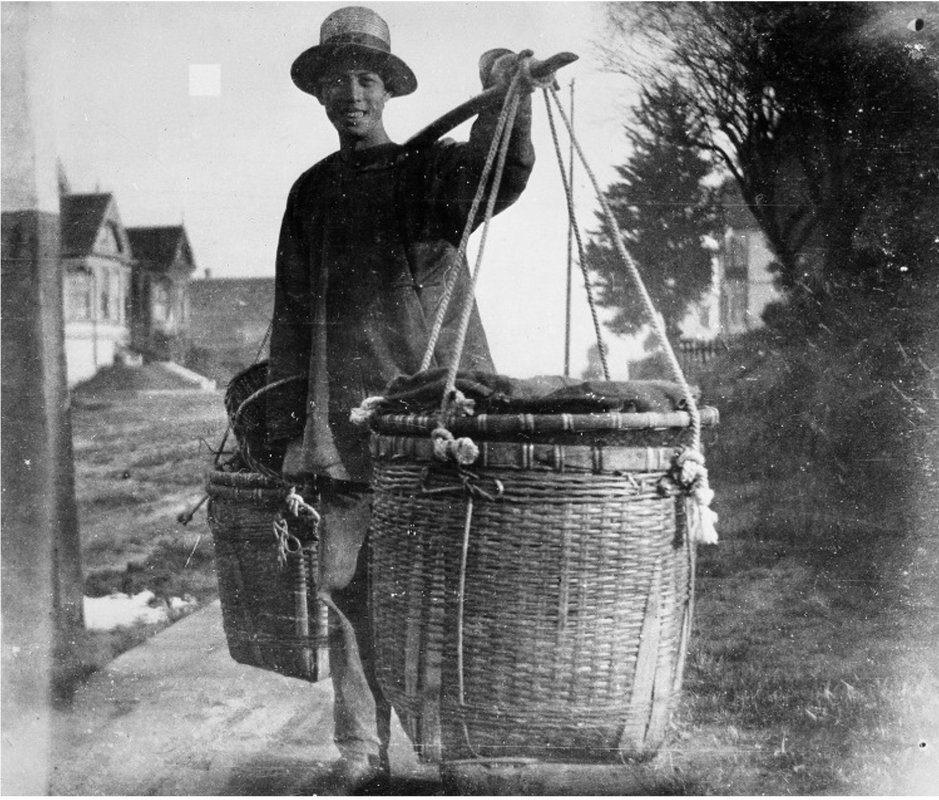 San Francisco Bay Area Vegetable Peddler in 1890 (Oakland Museum of California)
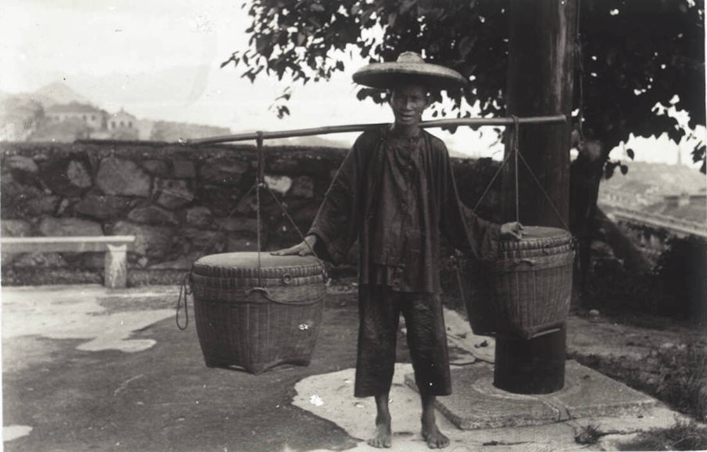 Man carrying panniers in 1900, probably in Southern California. (USC)
The Wash House and Opium Den Wars
As we have already noted, it took courage to run a wash house in Sonoma County if you were Chinese. On the other hand Chinese laundries filled a huge need in settlement-era California. They are first described in urban centers like Gold Rush San Francisco where, as Roderick Matheson said in 1849, …if a man wants a clean shirt, he can buy one cheaper than he can get it washed.(67) Just about every town in Sonoma County had Chinese laundries by the 1870s. The tiny hamlet of Valley Ford required two.(68) Wash houses produce a good deal of waste water, and before sewer systems were built, this became an issue. Nevertheless the earliest Chinese laundries were close to downtown. Even when a community like Healdsburg seemed to appreciate its Chinese laundries, race baiters like editor Thompson, complained on their behalf: …Healdsburg is troubled with a Chinese nuisance—Chinese filth almost in the heart of the burg which should be abated if the good health of the place is to be preserved.(69) Dr. William Shipley also described Healdsburg’s rival wash houses, run by Jo Wah Lee and Sing Lee: ...Many local people patronized these two celestial laundries, their business was gigantic, in fact, they were an institution in the town; ...There was a bit of rivalry between the two wash houses which reflected to the homes of their patrons. There was always four to six "pig tails" employed in each institution and both turned out perfectly beautiful laundry at a very nominal sum, ...they worked 12 to 15 hours per day...It was great fun to...watch them iron with their gigantic irons; first they would spread out the garment on the board, take a sip of water from a bowl and spew this water in a fine spray all over the piece...and then proceed with the ironing, at the same time keeping up a string of conversation in Chinese sing song...Their work, their customs, their language, in fact their whole ensemble, fascinated us small boys…(70) But it was the connection between wash houses and gambling games and opium smoking that was more troubling to law enforcement, especially since it sometimes attracted Caucasians. As early as 1872, four Chinese men in Santa Rosa were arrested for running gambling operations in their wash houses. In the same week Healdsburg saw an altercation involving a Caucasian, Hiram Briggs, who was arrested after shooting a Chinese laundryman in his shop with intent to kill. No reason was given for the attack, but one suspects something more serious than a spoiled shirt. The Grand Jury, as would be expected, later ignored the charge against Briggs.(71) In September 1876 in Petaluma a fan tan gambling game was raided, enriching the City coffers by $125.(72) In the same month came this report from the town of Sonoma: The usual monotony of Sonoma was disturbed on Sunday evening by the two Chinese companies situated there. The facts, as far as we can learn are to the effect that several members of the two companies were engaged in gambling; that one lost all his money—several hundred dollars—and then to still continue the game, sent for three young coolies. Only one the gambler, put up. Loosing the coolie he then grew exasperated and attempted the life of the coolie just lost. This nearly resulted in the death of the coolie and in the injury of several of the Chinamen. One Chinaman was shot in the leg. Several were arrested by the Sonoma authorities on Monday morning. Excitement ran high for awhile, and many of the people surmised that the companies were fighting for the control of the town.(73) The "companies" referred to above would be two of the Chinese Six Companies or the Chinese Consolidated Benevolent Association. The alliance that these companies formed in the 1850s began to disintegrate by the 1870s over turf or other differences. Such battles between companies became known as "Tongs", meaning war, and lasted in Northern California until the 1920s. Two months later this account from Santa Rosa, illustrates the reluctance of Chinese combatants to involve the police: The alarm occasioned by the blowing of the police whistle on Friday evening last was caused by a row in the Chinese quarters. A number of the valiant knights of the wash tub were engaged in gambling, when one of them came to the conclusion that another would be better off with his head split open, and seizing a hatchet he proceeded to execute his benevolent design. The other demurred and blew his whistle, but when officers arrived it was “All lite John."(74) By the 1880s local police departments made a concerted effort to shut down opium dens in the Hinton Avenue-Second Street "Chinatown" area of Santa Rosa. As reported in February 1883: A Raid on the Opium Dens. For some little time it has been pretty generally known that opium smoking was being regularly practiced in the Chinese quarter east of the plaza, and the District Attorney and other officers of the law have been planning a campaign against the offenders. The ball was opened last Saturday night at about nine o’clock, at which time Officers Smith and Mead and Constable Lowery, assisted by several citizens, raided three opium dens on Hinton Avenue, taking the inmates entirely unawares. The attack was so well planned and such a complete surprise, that the regular “programme of exercises” in each of the several establishments visited was found in full blast. Thirteen Celestials were bagged at once, ten being patrons, and three keepers, of the dens. Some tried to skedaddle, some begged to be let go, and others showed fight. It was all in vain, however, the whole gang being fastened together and marched off to jail…This is a start in the right direction, which we hope to see followed up. Opium smoking is not only a horrible evil, but a growing one, and it is certainly time it was checked. District Attorney Geary informs us that it is the intention of himself and the other law officials to take no rest in the matter until the practice is thoroughly broken up and rooted out.(75) Reports that whites were being rounded up in these Santa Rosa raids surfaced in June of 1883, when nine Chinese and two whites—called "layouts" for the effect opium had to make people lie down—were captured in an opium den on a Saturday night.(76) To Healdsburg readers came shocking news in 1883 of an opium den frequented by Caucasians: Marshal Jones raided the den on Tuesday evening last and found two whites in the premises. He captured considerable paraphernalia, and says he will break the business up if it takes all summer. Russian River Flag editor Leslie Jordon worried: We are positively informed that there is a Chinese opium den in this city where several whites have contracted an incurable passion for the debasing drug. What are we to do about it? (77) Suddenly reconsidering its tolerance of the local wash houses where such illicit activities might be entertained, only days later the Healdsburg City Trustees repealed the wash-house clause in the city’s license ordinance and the clause delegating to themselves the power to make exceptions. And for the first time Jordan found fault with the wash houses stating that…Citizens who are compelled to cross and recross the West street foot-bridge complain of the stench arising from the wash-water running down from the Chinese wash-house above…(78) Soon the campaign to stamp out gambling and opium dens began to clog the court docket, creating scenes like this one in Sonoma County Superior Court in October 1883: The ten Chinamen who were arrested for playing tan in a building on the east side of the Plaza last week, were called up before Judge Brown for examination. About seventy Chinese filled one side of the Court room. As usual the prosecuting Chinese witnesses could not be found, and the cases were dismissed.(79) Sometimes the violence among the members of the Chinese community became so complicated, and the language barrier so impenetrable that even murder cases involving Chinese victims and perpetrators were simply dismissed by the courts in Santa Rosa.(80) When policing failed, citizens tried other means, such as blowing up the wash houses. According to one account in May of 1884 in Santa Rosa: Blowing Them Up. —A bungling attempt was made to blow up a Chinese wash house, on Second street, on Monday morning about three o’clock. A lot of powder was placed in a salt sack under the floor, which was about two feet from the ground, and was evidently fired by a long fuse or train. No damage was done except to thoroughly frighten the celestial denizens of the shanty. Officer Rainey was at the south side of the new Court House when the explosion occurred, and going immediately to where the noise occurred, found matters as we have stated above. It is generally thought the deed was done by Chinese. No clue to the perpetrators has been discovered.(81) In October 1885 another unsuccessful attempt at arson reminiscent of the Second Street Gang is recorded. Oil soaked rags were placed on the roof of a wash house near the Santa Rosa train depot and set afire. An empty can was tied to the tail of their horse in the stable.(82) The second in a series of bombings was reported in July 1885 in Forestville, where a grocery store, meat market, and dwelling belonging to E. S. Hicks was completely demolished. Because Mr. Hicks and his wife had been absent that night, the press surmised that the guilty parties had known this fact. Editor Thompson immediately connected this bombing to other recent events: This is the second or third time buildings have been blown up in this vicinity. A house belonging to J. R. H. Oliver, and occupied by Chinese, was demolished in a similar manner some months ago, but the universal hatred for Chinese was considered to be the cause for that; but why this last attempt was made is a mystery.(83) The dawn of the New Year in 1886 saw an escalation in outright violence against the Chinese. That year started out with the following report from the town of Sonoma: …On New Year’s eve Dan McInnis of Sonoma, went into a Chinese wash-house at that place, and for the space of about fifteen minutes made things lively for the Mongolian denizens. Amongst other things, Dan broke down the door, smashed in the windows, kicked a young Celestial in the head, and to cap the climax, turned over a coal oil lamp and attempted to fire the building. He then "lit out” for parts unknown. Constable Sparks hunted all night for his man, and at last telegraphed to the Napa officers to be on the look-out for him. Constable Badderly discovered Mclnnis at the depot as he was boarding the train, and conveyed him to jail. The Sonoma constable came after him the same day and took the * terror” home. He it booked on a charge of arson.(84) On January 9, 1886 editor Thompson remarked about opium smoking in Santa Rosa: …The Chinese in our city have never before suffered the inconveniences of poverty as they are doing at this time. We are informed from reliable sources that in those places where smoking of opium is indulged in, they are using the drug twice, breaking and pounding the smoked opium into a pomace and resmoking the same. We are also informed that the opium smokers are confined to young men under twenty-one years of age.(85) In September 1886 came this report: White Opium Fiends. A party who professes to know something about the young men who make a practice of opium smoking, their rendezvous, etc., says the reason the officers cannot catch them in the Chinese dens is because they do not go there to smoke the vile drug, but simply purchase it therein and carry it to their own dens, where it is smoked. He avers that there are at least nine of these young men from the ages of 18 to 25 that frequent the same smoking place, and he thinks there is another gang of them, not so large, that frequent another place. The officers are not able to catch the white smokers in the Chinese dens, but they can arrest them while buying the drug, also take the Chinaman who sells it at the same time.(86) Only a few years later, in 1889, the birth of a pattern of addiction that would become a scourge for all races tragically emerged. Says the Santa Rosa Day Book: Word came to us about 1 o’clock on Thursday morning, that some twelve or fifteen young men and boys of this city were in the habit of visiting the Chinese opium dens and “hitting the pipe,” some having got so far along that they resorted to the injection of morphine in their arms. These things being true, a field is presented for the work of the reforming element of society and the legally constituted authorities of this city and county.(87) In the late 1880s and early 1890s cities passed ordinances against wash houses operating within the city limits or operating after 10 p.m. Along with Santa Rosa’s new ordinances prohibiting opium smoking and "illegal" fishing, these offenses caused scores of half-hearted arrests of Chinese residents, resulting mostly in fines.(88) When Jo Wah Lee, long-time Healdsburg laundry owner, was ordered to move outside the city limits in December 1888, he rightly protested this selective enforcement. The Laundry War Jo Wah Lee, the disgruntled Chinaman, in obedience to the dictates of a stern and relentless law, but assuredly not of his own free will and accord, has removed his business quarters to the Walker property on the west side of the railroad track. He swears Oriental vengeance on the head of every one who aided in his expulsion from town. He says that so far as he is concerned there shall be no race discrimination, and alike the white man and the Chinaman must go beyond the limits prescribed by the ordinance. The white men who are pursuing the laundry business are not inclined to accept Jo’s version of the law as the correct one, and they will probably bring the matter to a test in our courts at an early day. The Chinamen have made overtures to the owners of the steam laundry for its permanent rental, but after due consideration the proposition was rejected. As the people of this city subscribed to the stock with the express understanding that it shall lie devoted to white labor, the action of those with whom the negotiations were sought to be made can be readily understood and appreciated.(89) The Wickersham Murders
By far the most intense period of anti-Chinese violence throughout the county raged between January and June of 1886. Most historians attribute this to the spectacular Wickersham Murders, the much reported and misreported killing of a middle-aged white couple, Jesse and Sarah Wickersham, on their remote ranch near Skaggs Springs on or about Monday, January 18, 1886. The press immediately asserted that the Wickershams' absent Chinese cook committed the gruesome deeds, but the case never made it to trial. When I first came across the Wickersham murder case in old Healdsburg newspapers, I found many aspects disturbing and challenged the previously accepted version in a 1993 article. Since then other local historians have done the same. Re-examining the case in 2021, I note all of the old inconsistencies along with some new ones. The first reports of these murders came after the vehement anti-Chinese movement had reached a boiling point in Sonoma County. First appearing in the Press Democrat on Saturday, January 23, 1886, that same edition carried reports of anti-Chinese meetings being held around the county and a petition being circulated in Santa Rosa to boycott Chinese merchants, declaiming the motto heard constantly in California for the previous 13 years, The Chinese Must Go!(90) A native of Iowa aged 52 at the time of his murder, Jesse C. Wickersham was the nephew of Isaac G. Wickersham, president of the Petaluma National Gold Bank, and one of Petaluma’s wealthiest and most prominent citizens. Isaac and his nephew had arrived in Sonoma County in the early 1850s, and later married two sisters, Lydia and Sarah Pickett. Jesse previously fought for the Union in the Civil War, taking part in several major battles including Vicksburg and Shiloh. His next venture, a farm in Hawaii, failed, and he spent years working at his uncle’s bank, and also served on the Petaluma City Council. To improve his failing health with mountain air, Jesse Wickersham purchased a 4,000-acre sheep ranch about 28 miles west of Healdsburg in the vicinity of Skaggs Springs in 1880.(91) It is understandable that under any circumstances, accounts of a spectacular crime may differ. In the case of the grisly Wickersham murders, however, the inconsistencies are extreme. The original published reports of the case that are summarized here all came from local sources between January 23 through February 3, 1886. The story was of course carried in many newspapers nationally, but like the game of Post Office, more distant retellings simply added to the reporting errors. I am relying on the sources closest to the events and people involved. The first dispatch, sent out Thursday, January 21, 1886, came from George Skaggs (proprietor of nearby Skaggs Springs Resort) to Sheriff Tennessee Carter Bishop, who happened to own the ranch adjoining the Wickersham property. At about the same time another report came from another neighbor, Elliott Jewell, to Coroner King of Petaluma. Because of the swollen condition of the creeks in the area after a storm, the first search party, consisting of R. K. Truitt, Charles Cook, Deputy Sheriff Crigler, James Hoadly, George Skaggs, Elliott Jewell, Fred Wickersham (nephew of deceased), and Si Martin did not arrive at the Wickersham Ranch until Friday, January 22, allegedly four days after the murders. Later that afternoon at 3 p.m., Coroner King of Petaluma and Dr. Swisher of Healdsburg arrived. An inquest was immediately held under the direction of Coroner King with the following jury: S. Scot, W. Frazer, A. J. Soules, C. Martin, George Skaggs, A. P. Crigler, James F. Hoadley, A. B. Cook, and George B. Baer. After examining all the evidence the jury gave the verdict that Mr. and Mrs. J. C. Wickersham came to their death from gunshot wounds inflicted by unknown hands, the evidence pointing towards a Chinese cook in the employ of the deceased. Some of that search party traveled to Cloverdale on Saturday, January 23, leaving others to watch the bodies back at the Wickersham Ranch. In short order however, the bodies were transported to Healdsburg by wagon to be boxed on Sunday, January 24, as residents lined the streets and roads to watch them pass. A large crowd saw the coffins off to Petaluma at the Healdsburg Depot the same day. The Wickershams’ funeral was held in a rain storm on Monday, January 25, and they were buried in Petaluma’s Cypress Hill Memorial Cemetery only four days after first being discovered. To illustrate the discrepancies and contradictions in the published reports, I summarize important aspects of this case from each source. All of these accounts appeared in the local press between January 23 and February 3, 1886, and sources are cited at the end of these sections.
Note: I provide the summarized "evidence" from each report below only for historical sleuths. Most readers will want to skip down now to the "No Piece of Cake" section. Who Found Wickersham's Corpse?
The Murder Weapon
Sarah Wickersham Is Missing
Cake, Rope, and Rape
The Wickershams' Chinese Cook Is Missing
No Piece of Cake
There is no doubt that from the very first reports on January 23, 1886, the Chinese cook, Ang Tai Duck, was targeted for the murders. Although any modern reader well schooled in crime drama could raise objections to the many discrepancies and inconsistencies in the "facts" of the case as reported in the press, alternate interpretations are stymied by the passage of time and lack of any concrete evidence. Marshall Frederick Gustavus Blume, who figured largely in the investigation, had married a land grant owner's widow in the 1850s and subdivided the town of Bloomfield (originally Blumefield). He lived in Freestone and generally policed western Sonoma County, rather than Healdsburg. Blume and others in the search party were intensely anti-Chinese. There are conflicting accounts about who first discovered the murders. Italian wood choppers camping on the ranch? A group of local Native Americans who brought news of the Wickershams' absence to a neighbor five miles distant, Elliott Jewell? If Jewell could see Jesse Wickersham dead in a chair through the dining room window when he arrived, why didn't the Italian or Indian workers see him, and why did it take the workers three days to report it to neighbor Elliott Jewell? Was Jesse Wickersham first found on the floor covered by a blanket? Who did that and why was it not there later when the search party arrived? Was Jesse Wickersham’s supper laid out before him on the table or was it upset in his lap? Was the shotgun found on the kitchen floor, or propped up between the dining room and the Chinese cook’s room? Why would the murderer leave the murder weapon in plain sight? Why did no one (Elliott Jewell or the workers) think to look for Sarah Wickersham in her bedroom just off the parlor on Thursday, January 21st? We are told that they searched the property and outbuildings, but not all the rooms of this very small house? Sarah was first discovered in her bedroom by the search party on Friday, January 22. This one odd failure to look in Sarah’s bedroom casts suspicion on neighbor John Elliott Jewell (1852–1932), allegedly the first one to discover Wickersham’s corpse on Thursday. Little is known about Jewell, the son of wealthy pioneer Petaluma dairyman, Isaac Jewell. He married (Clara B.) and had a son (John Elliott Jewell II) in 1897. The piece of cake that was reportedly placed on Sarah Wickersham’s pillow later became a plate with five pieces of cake, as if she had perhaps been eating in her bedroom. Was she raped or not? If the motive was robbery, why were all known valuables and money left at the scene of the crime? All accounts of missing cash are speculation. If the Chinese cook (Ang Tai Duck, at first called Ah Tai) murdered the Wickershams, why did he leave so many of his own valuables: a bottle of whisky, a pipe, some money, a number of trinkets and his only suit of good clothes? Why would he leave the most incriminating item, his own diary, by which he was identified by the search party? Would a man in such a purported hurry take the time to place a plate with five pieces of cake on Sarah Wickersham’s pillow and remake her bed? Although Ang Tai Duck was supposed to be in such a hurry that he did not take any of his possessions, he conveniently took the time to stop and confess his crime to his uncle in Cloverdale. Even less credible is the fact that this uncle spoke English well enough to say the words attributed to him by Marshall Frederick Blume. These are only a few of the perplexing questions that make analyzing this case no piece of cake. No credible motive was ever put forth for the crime. The Fate of Ang Tai Duck In the weeks and months following the murder, reports trickled in about attempts to find the cook and take him off the ship in Japan, or have him extradited by the Chinese government. A reward was offered by Governor Stoneman.(93) A report in March 1886 stated that Ang Tai Duck was aboard the Steamer City of New York bound for Hong Kong.(94) A later report claimed he had conveniently confessed his guilt to the captain of that ship, Captain Searle, and was detained by him and taken to Hong Kong where he was imprisoned awaiting extradition, and that two detectives had set off to retrieve him. Yet another account has Ang Tai Duck escaping from authorities in Yokohama and confessing to the Chinese Quartermaster of a ship bound for Hong Kong.(95) Finally came this detailed account, the last, which appeared in the San Jose Herald: Ang Tai Duck Hangs Himself, San Francisco, April 28…The advices received this morning by the steamer Belgic from Hong Kong say that the Chinaman Ang Tai Duck, who so foully murdered Captain and Mrs. Wickersham of Sonoma county, Cal., some four months ago and who afterward escaped to China, committed suicide in Victoria Jail. Hong Kong, on the night of March 29th by hanging himself to a peg in the wall of his cell. An inquest was held on the body in Hong Kong jail. The first witness was Dr. Ayers, colonial surgeon, who testified that the deceased had never complained of ill health and there was nothing to indicate that he was insane. There was a deep indenture around the throat cutting into the windpipe made by the cord which had been wound round the neck and by which the body had been suspended. Thomas Roalf turnkey stated that while on his rounds in the jail at 1:30 a. m. he found the prisoner who was confined in a cell with two others, hanging by a cord to the gate about six feet from the ground. The two other prisoners were asleep. The jury returned a verdict of suicide, adding that they considered the deceased in view of the charge against him should have been kept under more constant supervision. The cord apparently was the one around his waist used to hold up his pants.(96) Possible Serial Killer? It is difficult to believe these accounts and unfortunately there is no evidence with which to form any other. The Americans may have driven a man, innocent or guilty, to suicide, we will never know which. Or, having gone all the way to Hong Kong, the American officers may have been reluctant to report that the cook had escaped or that their target was obviously misidentified and concocted a more satisfying conclusion for their constituents. They may simply have been paid off. Considering that most Caucasians at the time could not remember or recognize individual Chinese in their own communities, nor remember their names, the feeble attempts to positively identify the cook seemed futile from the outset. The editor of one newspaper immediately recognized some similarities between the Wickersham murder case and another case in Marin County six years previously. In April 1880, the remains of C. W. Severance. were found buried over four feet deep in a wood-shed on the premises near where he lived. His saddle, bridle, hat and overcoat were buried with him. Five bullet holes were found in the body, and a gash on the back of the neck, purportedly made with a hatchet. A piece of hay rope was tied around his neck. On his body was found $l01.50, and his gold studs. Ah Bung, a Chinese cook employed by Mr. Severance, was arrested on suspicion, and a complete chain of evidence was worked up against him. The night of the murder, Bung allegedly stopped at the house of Sam Kee, a Chinese resident of Sausalito. Beneath Kee’s house was subsequently (and conveniently) found a pistol, C. W. Severance’s watch, and a jacket that Mrs. Severance had made for Bung, containing $1,000. Ah Bung did not flee, but was immediately arrested anyway. He reportedly took off his undershirt, tore it into straps, knotted it, and hung himself in his jail cell. His suicide was put forth as proof of his guilt.(97) Press Makes Use of Murders The press and others used the Wickersham murders to incite public sentiment against the Chinese throughout the nation. Shortly after the murder became public, editor Thompson of the Sonoma Democrat said, …We hope the feeling, now intensified, will lead to the organization of anti-Chinese societies in every town in the county...(98) Yet such anti-Chinese committees and leagues had already been formed in most Sonoma County towns and hamlets. For the next six months every newspaper carried copious accounts of such meetings in every issue. The Wickersham murders impacted the entire Western United States and anywhere there was a sizable Chinese population. Even a personality as respected and famous as Luther Burbank felt the need to sign himself as a member of a local “exclusionist” committee in 1886.(99) Chinese businesses, and those who employed Chinese workers, were boycotted. The Chinese were attacked, beaten, and driven out in many isolated incidents. Some had their homes and shops burned to the ground. 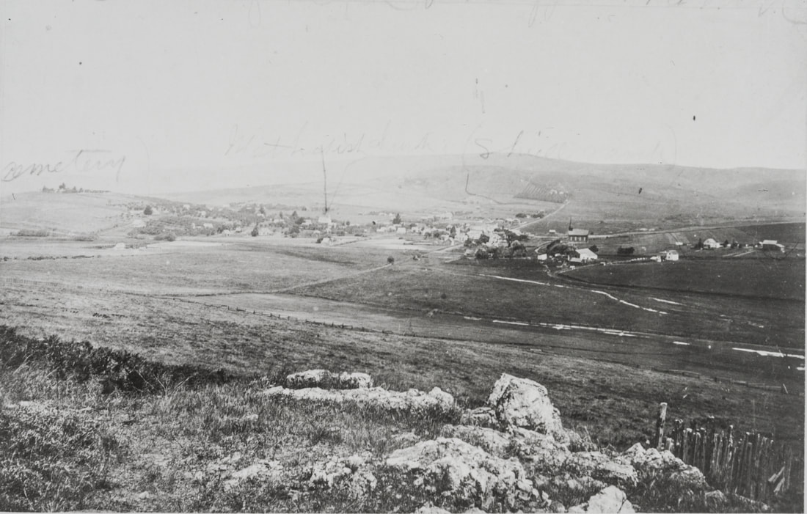 Panorama of Bloomfield in its heyday, taken by Thomas Rea in 1876. This view looks northwest with Petaluma-Valley Ford Road horizontal in the middle distance. Bloomfield Road goes to the right up into the hills on the opposite side, leading to Sebastopol. Although the view is not sharp, there were many more small homes, farms and businesses at this time, two churches, and of course several saloons. On a hill to the far left is the cemetery. (Sonoma County Library)
Bloomfield: Legacy of Hate
When I was a college student writing a history of the charming, bucolic hamlet of Bloomfield in western Sonoma County in the 1970s, I interviewed long-time residents, some the descendants of early settlers. They told me that citizens in the once larger town had poisoned the water supply of their Chinese population, killing several before the rest were driven out one night in 1886. At the time I was puzzled that such oral history had no official published version, for I could find nothing about the Chinese in Bloomfield in any of the major histories of the county. Now, well acquainted with the racism of two Sonoma County writers, Sonoma Democrat editor Thomas L. Thompson and Tom Gregory, I do not wonder. It is ironic that these writers, one in Santa Rosa, one in Bloomfield at this time, should have written so many thousands of hateful words about the Chinese residents of Sonoma County in the newspaper, but none recorded in county histories. The news of racist violence in Bloomfield went largely unreported in Sonoma County newspapers as well. Skeletal accounts are found mostly in newspapers from other parts of California, now available in online archives, but not to this author in 1975. Bloomfield was by no means alone in its terrible treatment of the Chinese, but it is singled out for a particular intensity that drew the attention of the Chinese consul and other state and federal law enforcement agents. Chinese residents first came to Sonoma County in the 1850s, often as laborers for the railroads, and then as agricultural workers. By the mid 1860s Chinese businesses had sprung up in most towns. Before the railroads came, Bloomfield was a major stage coach stop and was at one time larger than Santa Rosa. As described previously, Bloomfield had so many Chinese laborers by 1869 that their camps were easy pickings for thieves who robbed four separate Chinese camps outside of Bloomfield for a total of $300 at a time when Chinese workers earned no more than a dollar a day. No arrests were made.(100) The camps housed seasonal workers who harvested the potato, grain, or orchard crops. They were usually not counted in the census, so it is difficult to estimate their true numbers. One oral source, Charles Hall, stated that there could be 300 to 500 workers living in the vicinity of Bloomfield at certain times of the year. The large population of Chinese in Bloomfield apparently caused little trouble for the town. I can find only one charge of theft. In March 1869 a laundryman, Sing Kee, was arrested on a charge of grand larceny. A tailor shop had been robbed and suspicion immediately attached to Kee. A search was made of his house, and the missing articles found. As with so many other crimes in Sonoma County, suspicion fell first on any nearby Chinese resident, sometimes corroborated by suspiciously lucky discoveries of incriminating evidence.(101) By 1875 there were enough year-round Chinese residents to fill a boarding house on the west side of Bloomfield’s Main Street near its intersection with Petaluma-Valley Ford Rd., run by a man named Tung Wa.(102) Oral history also described the Chinese living in the basements or ground floors of some of the Main Street commercial buildings.(103) A sparsely educated newspaperman, Tom Gregory, became the Bloomfield correspondent for the Sonoma Democrat by the 1870s. Gregory lived on the farm of his mother and stepfather, Martin D. and Sarah Stone, about a mile and a half from Bloomfield. Even the earliest of Gregory’s rambling, sometimes deranged "Letters from Bloomfield" derided the Chinese. In describing the dedication of the new Masonic Lodge building there in December 1876, the 22 year-old Gregory made allusions to Greek mythology: …But Min[erva] was a heathen and so is a Chinaman. So, when speaking of Phidias, Demosthenes or Plato, we unconsciously associate lordly Greek with the wretched human scum which swarm our coast. (104) As news of the Wickersham murders was filling the pages of local newspapers, on January 29, 1886, reports from San Jose and Humboldt County described an anti-Chinese mass meeting of Bloomfield citizens. This would not be unlike any other Sonoma County town except that the outcome was to declare that all Chinese in Bloomfield had three days to depart.(105) A week later the Sonoma Democrat finally reported on the second anti-Chinese meeting in Bloomfield, and in so doing we learn that at the first meeting a committee of twelve was appointed to devise means for the expulsion of the heathen from their midst. Editor Thompson complained, There is no town in the state, of its size, where there are so many Chinese. The committee appointed at the first meeting gave the Chinese ten days to leave town. The same issue reported that the Grand Jury was meeting that same day in Santa Rosa to consider some earlier violent event in Bloomfield, referred to as the case of the Bloomfield Anti-Chinese rioters, with witnesses being examined.(106) On February 9, the San Jose papers reported that the Chinese were indeed leaving Bloomfield, and that between 40 and 50 Chinese residents of Bloomfield had arrived in Petaluma the day before: Tomorrow ends the ten days given them to leave Bloomfield by the anti-Chinese Committee. A number of Chinese there say they will not leave, but it is expected they will be forced to. Another report from Humboldt County described four wagon loads of Chinese arriving in Petaluma on February 8, and large numbers still arriving on February 9.(107) No local accounts of the exodus appear until February 26, when editor Thompson stated simply, There are very few Chinamen in Bloomfield.(108) A day later came Gregory’s disingenuous "Letter from Bloomfield", which hints at some earlier episode involving "spear and saber." Ed, Democrat: Quiet! Nothing disturbs the political and social equanimity of Bloomfield. Mighty storms which agitate and topsy-turvy turn other portions of the globe, break away and sink to tranquillity when they touch the central calm of Bloomfield…The millennium broods over Bloomfield. Plowshares and pruning-hooks swing where once the spear and saber blazed. The eddies of the great Chinese question ripple through our body community. Several meetings have been called, attended and adjourned. There has been no excitement, no sandlotism, [a reference to the 1877 Sandlot riots in San Francisco] no noise, no foolishness. Simply a strong, well foundationed determination to force away an injurious element by quiet, lawful means. Hereafter no Chinamen will be employed in this vicinity if white laborers can possibly be had. Last week a Deputy United States of America, Planetary Sphere, Solar System, Marshal (I have forgotten his name) was around. Was sent by Colonel Bee and the august Emperor of China to inquire into the deplorable state (?) of our Chinese citizens, but he found no Chinaman being molested in his rights of liberty and the pursuit of happiness. The Asiatics are yet living in peace and in the security vouchsafed to them by the laws of the United States, and so he took a social drink with [Valentine] Stillwell, the anti-movement President, and Geo. Swan, the arch-agitator Secretary, and departed satisfied that Bloomfield was solid for law and order. (109) In a series of letters to the Santa Rosa paper in late February and March it becomes clear that several Bloomfield businessmen and one prominent former Bloomfield businessmen had been renting their commercial buildings to the Chinese. Anti-Chinese agitator and Bloomfield butcher Valentine Stillwell called out August Knapp, proprietor of the Bloomfield general store and post office, and large landowner O. H. Hoag. Hoag, who had relocated to Santa Rosa in 1875, apparently spoke out against the Chinese publicly, but continued to rent to them. O. H. Hoag responded in kind, and pointed out the inconsistencies and hypocrisies of the anti-Chinese movement: …The fact is I owned four structures, not "fire traps", on Main street, in the center of the once prosperous village of Bloomfield, and until the advent of the "Chinese horde", it was valuable property, but lately is almost valueless. It was after my removal from Bloomfield that the "leprous gang" took possession of that beautiful village, situated in one of the richest valleys of our great state, and [Valentine Stillwell] was one of the foremost in offering inducements for their accommodation. So great was his effort and success in securing their favor that I lost their patronage, and my shoe shops, harness shops, and offices were not suitable for Chinese harems and opium dens, and [Stillwell] and some of “his citizens” took advantage of my absence, and built more attractive palaces for their accommodation. My friend’s successes soon influenced him to disregard the claims of his own countrymen, and he discharged his faithful old butcher [August Knapp], one of the pioneer residents of Sonoma county; but our friend, disregarding his vows, secured the services of a hog-killing, “opium fiend, leprous scourged ” Chinaman, who had a wife, and the favor of his new formed friends was so much appreciated that the hog-killer named his only son "Val,” …and the old butcher [Knapp] transformed one of my shops, not “fire traps,” into a neat and tidy shop, where good, wholesome meat was sold. Sequence —Val lost his pork business, “his citizens” were accommodated, and I secured a good tenant. [Stillwell] finding himself in this awkward condition caught the echoes of “the Chinese must go,” and joined in the loud acclaim, and sent away the skillful hog-killer, with his pockets full of gold and silver, and his godson and all the occupants of his opium den, back to the Flowery Kingdom, not waiting for my old Chinese merchant to dispose of or pack his goods. In conclusion, I beg to inform my friend that I have renewed no contract with my Chinese occupant, and don’t intend to do so…and I have no doubt that in a short decade (if Val. can stand the strain), the Chinese will go in peace, lawfully. For my own part, I neither employ Chinese, nor buy their goods…O. H. Hoag In fact, Obediah Hoag began his career in Bloomfield in 1857, where his family farmed and he opened his first law office. He married a daughter of one of the first Bloomfield settlers, Judge Larkin D. Cockrill. Hoag moved to Santa Rosa in 1875, after the railroad bypassed Bloomfield, and purchased a house on First Street near Santa Rosa Creek. While continuing his law practice there he was elected to the state legislature and became County Recorder. Although he spoke out against the Chinese in the mid 1880s, in later years he would help and defend the Chinese in Sonoma County.(110) A few Chinese businessmen must have stayed on in Bloomfield in 1886. Once again we rely only on San Jose newspapers to tell us that on March 5th an attempt was made to blow up a Chinese washhouse at Bloomfield. The floor of the building was badly damaged.(111) On March 14 the Santa Cruz Sentinel informed its readers that John Johnson of Bloomfield had the remaining Chinese in Bloomfield arrested, owing to threats made by them against his life.(112) Days later the San Francisco newspaper reported that some person put a bag of salt in the spring which supplies the town with water. It is supposed that the motive was to get even with the party who owns the spring and who had rented some buildings to Chinese.(113) None of these incidents were reported locally.
I must assume that even these efforts were not entirely successful because in October 1886 three Chinese men from Bloomfield were sent up to Superior Court for opium smoking. Editor Thompson explained that while smoking opium itself was not a crime or misdemeanor, maintaining a business where opium is smoked or sold was a misdemeanor by the Penal Code. Apparently the Assistant District Attorney did not agree and the Chinese businessmen from Bloomfield were discharged. In the same issue, quoting the Petaluma Argus, we learn: It seems that the boycott element in the vicinity of Bloomfield cannot wait for the operation of the restriction law to relieve them of the Chinese evil in their midst, but have again [note the word "again"] taken the law into their own hands and have forcibly ejected them from the town. This is not only wrong but it is dangerous business. Those American citizens who owned the houses that were occupied by the Chinese, will not submit to have their property damaged as it was recently. John Crose, who is represented to us as a good, law-abiding citizen, had his potatoes dumped out of the sacks, and the sacks burned, because they were dug by Chinamen.(114) In the fall, with the harvest, came another semi-intelligible progress report from Tom Gregory: Speaking of birds, puts me in mind of some lines I lately composed—you know I compose poetry as I plow, like Bobby Burns. I'll send them to you…But, before I afflict you with the rhyme, I’ll tell yon that potatoes are turning out well — doubly well, because of white men. The Caucasian shovelers are the Kings of Spades here. The farmers are employing them in preference to the Chinese, in many cases giving them more per week than the Asiatics have been getting. The white men do better work and make from $1 to $1.25 per day. Three men in Jim Robinson’s field earned $5 the first day they dug, at 11 cents per sack. Thus are we solving the great labor problem. The Chinese must go. Sic transit velocipedus duplex cosino… Tom Gregory. Bloomfield, October 22.1886. (115) A week later the United States government did attempt to bring those responsible for the violence in Bloomfield to account. Although the incidents are never fully described, they are repeatedly referenced. The San Francisco, Sacramento, and San Bernadino papers reported that two more of the Bloomfield rioters of Chinamen, Albert L. Crose and Claude Van Arsdale (or Van Osden), had been arrested by Deputy U. S. Marshalls Burns and Hopkins on October 27. That brought the total arrested to seven, including John Johnson, Frank J. Johnson, Charles Easton, Arthur T. Carter. and J. T. Curry. Belatedly only one county paper, Healdsburg’s Russian River Flag, posted a small notice of the arrests, for assaulting and driving the Chinese from Bloomfield.(116) . In November these men were brought before the United States Grand Jury.(117) It was left to the far off Weekly Butte Record to describe the scene. A case of some interest is at present undergoing investigation by the United States Grand Jury, and the corridors of the Appraiser’s building in San Francisco were tilled on Tuesday by witnesses called for the Government and defense. It appears that the 200 white inhabitants of the little town of Bloomfield, Sonoma County, have long felt aggrieved at the presence of a great number of Chinese in their midst; indeed, some of the witnesses say there are no less than 600 Celestials in the town. On October 14th last popular opinion expressed itself in a large mass meeting of the Bloomfielders, who adopted resolutions ordering a Chinese exodus in a short space of time. Accounts differ as to the exact time specified, witnesses for the defense agreeing that it was ten days, while opposing testimony shows that it certainly was not less than 24 hours. A committee was appointed to serve the notices to quit on the Mongolians, some of whom, taking the hint, left, while others remained; and it is here that the Government thought it necessary to interfere, for those Chinamen who remained petitioned the constable of the town for protection, alleging that their houses had been wrecked and themselves beaten by the white men. The constable refused or was unable to interfere, and the Chinamen then petitioned Judge Temple, on which warrants were sworn out against six men, who were charged with riot. These men are John Johnson, Frank Johnson, A. P. Carter, C. Carter, C. Eastman, Claude von Osden and Albert Crose. They gave bail in the sum of $500 each, and their cases were to have been examined in Petaluma on November 9th, but were postponed to November 16th, by which time the United States District Attorney concluded to bring the matter at once before the United States Grand Jury without the formality of a preliminary examination. This has been done, and seventeen witnesses called for the Government, four of whom were examined yesterday afternoon. The charge against the men a conspiracy to disturb the public peace.(118) A San Francisco paper added a few more details: …The alleged offense was committed on the 14th of October last. A few days previous to that date the citizens of Bloomfield held an Anti-Coolie meeting and ordered the Chinese residing in the town to leave immediately. John Johnson presided over the gathering, and his son, Frank Johnson, acted as Secretary. A committee was appointed to see that the resolutions were carried into effect…The Chinese did not leave immediately, but before the night of the 14th had vacated their houses. That evening the Chinese quarter was attacked by a mob. One house was demolished and two others were fired into, with either pistols or rifles, or perhaps both, as large bullets were afterward dug out of the timbers. The matter was reported to the United States Marshal's office here and a Deputy went to Bloomfield to inquire into the affair, the result being the arrest of the parties named above. The defendants, who are respectable-looking and appear to be representative men, say they knew nothing of the affair. The row occurred at night and they state that the attack on the houses was made by a party of strangers who visited Bloomfield that evening in attendance on a party at a skating rink.(119) Ultimately the United States Grand Jury chose to ignore the charges against the Bloomfield men who assaulted and drove Chinese businessmen and laborers from Bloomfield in two separate episodes, one on October 14, 1886. And once again, no local newspaper even reported on the Grand Jury's decision except Healdsburg’s Republican Russian River Flag.(120) Predictably, Tom Gregory gave a slightly different and very belated description of the exciting event a month later: …The Deputy United States Marshal occulted a whole bright galaxy of our boys, charged with monkeying with the Chinese. The affair went up in smoke, however, as the animus sprung of the officious zeal of Colonel Bee’s detective after the Six Companies’ standing reward of $10,000, and was based on the complaint of a Chinaman who had been arrested in Bloomfield for running two opium dens. The boys came marching home again, and the remainder of our yellow citizens quietly folded their tents like the circus and faded quick away…(121) That was not quite the end of the incident, as on December 24th it was reported that Secretary of State T. F. Bayard had conveyed to California Governor Stoneman, a communication from Chang Yen Hoy, Chinese Minister at Washington, calling attention to outrages alleged to have been committed at Bloomfield by a gang of desperadoes, who drove Chinese laborers from that place. The Secretary calls attention to article III. of the treaty with China, which guarantees to the Chinese the same protection extended to subjects from the most favored nations.(122) Sonoma Democrat editor Thompson , who apparently never published a word about the atrocities in his own county as they unfolded, did have something to say about a U. S. Supreme Court Ruling regarding the hoodlums of Sutter County: The Supreme Court of the United States has finally rendered a decision in the Nicolaus Chinese case. It will be remembered that a year or two ago, when the public mind was excited against the Chinese, and the “boycott” was at the height of its popularity, some of the white citizens at Nicolaus, a small town in Sutter county on the Feather River, forcibly ejected the Chinese residents of the town by gathering together their personal effects, putting them upon a steamer, and compelling the Chinese to go with their property away from Nicolaus. …The citizens of Bloomfield, in this county, who were arrested for a like offense must be discharged, as well as all others who molested the Chinese and were arrested therefore. It follows from the foregoing that the Chinese in California must rely solely upon the State for the protection of their personal rights and rights of property. They are put beyond the pale of Federal protection by this decision, at least until Congress shall enact laws for this purpose. Public sentiment in the State, while opposed to Chinese immigration and Chinese cheap labor, is not in favor of inhumanity or brutality. It will never approve of violent measures against individual Chinamen for the purpose of ridding the State of them as a class… (123) Still the racists of Bloomfield had not had their fill of violence. On Friday, June 3, 1887, while almost all residents of the town were away at a picnic except eight men, parties unknown made two attempts to burn down the Chinatown of Bloomfield. At least five California newspapers reported on this event, none of them in Sonoma County. (124) Where was the "Chinatown" that these men tried to torch? I interviewed a long-time resident and descendant of settlers, Malcolm Pierce, in 1976. He told me that Chinese had lived in eight to ten small cabins on the present site of Emma Herbert Memorial Park in Bloomfield, which also would have been the approximate location of Tung Wa’s Chinese boarding house, described in 1875. When I first came to Bloomfield about 1970, there were perhaps a dozen small redwood structures lined up in rows near a Eucalyptus grove at the intersection of Roblar Road and Petaluma-Valley Ford Road. We thought they must be chicken coops, but there were no others like them in the vicinity. I regret that I did not take a closer look before they were dismantled for the lumber later in that decade. According to another resident, Charlie Hall, It was all Chinese labor in the early days—town went down after they drove 'em out in 1886.(125) When the Chinese left they took a fortuitous source of cheap labor with them. In the summer of 1887 Dow Hakes a farmer living between Bloomfield and Valley Ford tried using 15 girls to pick his 12 acres of raspberries instead of his usual Chinese crew.(126) By the harvest season of 1887, the labor situation for farmers was looking bleak for Bloomfield: White Men Wanted. Potatoes around Bloomfield are better than they have been for ten years, and there is every prospect of a large yield. Laborers are scarce. Last year white men and Indians did the digging, performing satisfactory work and freezing the Mongols out, and the farmers want the same order of affairs now. As the potato-digging industry in that locality amounts to $2,500 or $3,000 each season, it is a considerable item of finances. That this sum should be earned by laborers who may expend it in the neighborhood, and not by the coin-draining class, whose employment is ever a detriment.(127) …Potato digging has generally commenced. It is the best for several years. It is impossible to get enough white hands. Chinamen are scarce and disposed to boycott the Bloomfield country, from which they were driven a year since…(128) The Chinese did not return to Bloomfield, and that was one of the reasons that agriculture waned there in favor of dairy ranching. The informants who spoke of the deeds of their ancestors in the 1970s did not do so with approval or pride. Although I have not found corroborating evidence of Chinese murdered in Bloomfield in 1886, I find their account of these murders credible. According to Malcolm Pierce, if a Chinese man heard the name "Bloomfield" in decades after, he would not say its name, but state simply, "We walk around that hill." The Chinese Fight Back
There are a few reports of alleged petty theft by Chinese from their employers in Sonoma County, but the majority of news involves Caucasians robbing the Chinese of their hard-earned cash. When one reads these accounts over the course of years, it appears that the Chinese, who begin as defenseless victims, increasingly defended themselves.(129) Beginning in the 1880s the violence rained upon the relatively small Chinese population in Sonoma County began to be more often returned in kind. One of the earliest instances happened during a freak snowstorm on January 6, 1883, that became an excuse for more Santa Rosa hoodlumism: During the snowstorm last Sunday, the Chinese in town were regularly mobbed by the small boy element, and chased from one place to another amid a perfect broadside of snowballs. They finally collected around their Second street headquarters and made a stand, whereupon the battle raged so fiercely that the grand high-you-muck-a muck of the heathen forces came to the front with a big six-shooter…(130) Later that spring came this report wherein Sonoma Democrat editor Thompson grudgingly noted the dangers of encouraging these young Santa Rosa racists : While some Chinamen were crossing the iron bridge this Monday afternoon, a number of boys who were collected there began pelting and otherwise annoying them. The result was a pitched battle, the Chinese attacking the boys and driving some of them down into the creek. One in his anxiety to get away, ran through the water where it was waist deep, even then barely escaping capture. The Celestials were so worked up to such a pitch of fury at the bad treatment they had received that according to the statement of an eyewitness, they seemed determined to kill the boys if they could lay their hands upon them. Some of these fine days, if the custom of “rocking” Celestials is not abandoned, some of our young lads will as likely as not be used up, and then it won’t seem half so funny.(131) Thompson for the first time in 1886 distinguished between Chinese immigrants and native-born of Chinese heritage, and also noticed the effects of assimilation and the determination of these men to defend themselves: …The following incident occurred on Fifth street the other day that will well illustrate the point: A young American-Chinese boy, of about 15 or 16 years of age, stood on the edge of the sidewalk, between Mendocino and B streets. He was dressed in the height of fashion—stiff hat, standing collar, polished shoes, and in fact looked like a dapper dry goods clerk on his Sunday out. Three boys of about his own age chanced along, and noticing his neat appearance chose him for their object of ridicule. No doubt feeling brave in the strength of their numbers, they made use of several rather forcible adjectives. As they were about to pass the Chinaman, he turned suddenly and grabbed firm hold of two of the young blackguards and rolled them in the dust of the street, without so much as crumpling his highly polished boots. The third young man did not wait to assist his comrades to their feet, but disappeared down the street as fast as his pedal extremities would carry him. The young athletic coolie thrust his hands into his pockets and walked away.(132) In September 1886 the tents of the Chinese laborers in Charlie Farmer’s hop fields just southeast of Santa Rosa were burned. The workers lost all of their clothing, food and other possessions.(133) The next week a battle broke out at another hop yard owned by Ferdinand Hansel near Forestville. The first reports that trickled in indicated that Chinese hop pickers had surrounded the Italian hop pickers, killing 12 out of the 84. So, after all business in town was suspended because of the outraged uproar, a party including an armed Sheriff and armed citizens found a less dire situation: …Everything was found in great confusion; the Chinamen standing in groups discussing the affair. The trouble originated from a quarrel which occurred Friday between a Chinamen and an Italian who were loading hops on the wagon, during which the former called the latter a fool. Ill feeling had been brewing for several days between the whites and the Chinamen. When the Italian met the offending Chinamen Saturday he struck him, upon which three other Chinamen rushed in and took their comrade’s part, knocking the Italian down and bruising him severely, he being only saved by the timely assistance of the whites. This was the signal for a general uprising of the Chinese, who immediately made an attack upon the whites with knives, pistols and clubs. The white men assembled together, prepared to receive them, the women and children having retired in fright to a neighboring hill. The Chinamen surrounded a cabin in which the offending Italian was being guarded and demanded him in authoritative language saying “they would kill him.’’ Being refused they tried several pistol shots through the cabin. The Italian refused to leave until the Chinamen had all departed, when he was taken away to the Italian Colony. It is understood that he and his friends are so enraged that they are swearing vengeance on all the Chinese hop pickers. The officers being unable to identify the Chinamen who did the shooting, returned to town, no arrests having been made.(134) There would be more trouble between the Italian and Chinese field workers. The more recently arrived Italians competed directly with the Chinese, even more so than their predecessors, the Irish. In September1896 an affray landed three Chinese and one Italian hop pickers in jail, although there were no fatalities. A month later they fought in another hop yard on Guerneville Road. Again three Chinese were arrested, but no Italians.(135) When an altercation between a Chinese laundry owner, Hi Lung (also called Ah How), and a Caucasian, Marion Patrick, resulted in the death of the white man in the town of Sonoma in December 1890, the usual outrage and threats of murder were directed at Hi Lung. Reports that a fight broke out over an unpaid laundry bill may be unreliable, but Patrick attempted to take his laundry without full payment and when Hi Lung tried to prevent it, he was punched to the ground. Bleeding on the floor, Hi Lung pulled out a revolver and shot Patrick dead. When Marion Patrick’s relatives arrived after Hi Lung was arrested, local law enforcement and Lung’s attorney, A. B. Ware, resorted to elaborate means to protect and transport Lung. An even more remarkable and unprecedented event occurred at the subsequent trial.: no fewer than 18 Caucasians testified for the defendant, indicating that... All the evidence went to show that Ah How had been regarded as a quiet, peaceable Chinaman, and that Patrick’s reputation was unsavory.(136) 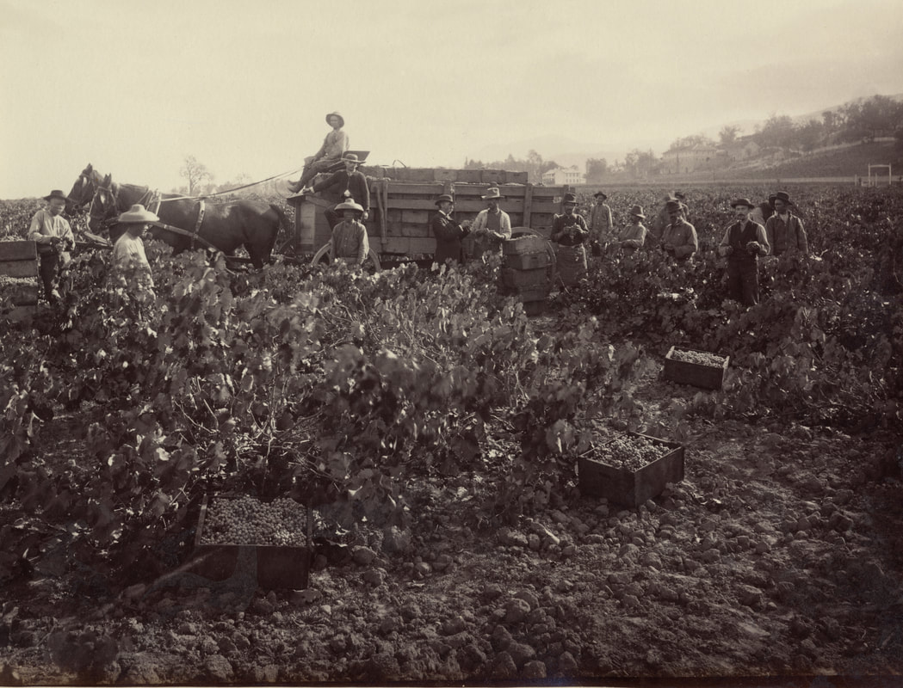 Chinese and Italian (?) crews work side by side in this Napa vineyard in 1880. Sporadic violence between Chinese and Italian laborers broke out in Sonoma County in the late 1880s and 1890s. Taber photo (California State Library)
The Boycott Fails
Most businesses and farmers in 1886 observed the boycott, but there were a few notable exceptions. During the height of the anti-Chinese boycott, a Mr. Crawford of Sebastopol thought he might have trouble selling his Chinese-picked fruit to Santa Rosa merchants. Monday morning he arrived in town with a wagon loaded full of the delicious fruit, took a stand on Fourth Street, and began selling his berries by the box. His price to the anti-Chinese boycotters was $1 a box, and to all others thirty cents. In a very short time he sold out.(137) By July Mr. Lambert, a farmer in Cloverdale tried to bring in Chinese workers to a community that had driven them all out soon after the Wickersham murders.(138) Despite the exhortations of newspaper editors calling for the white youth of Sonoma County to step up to the plate and pick crops, Chinese labor was sorely missed.(139) Slowly, Chinese labor was reintroduced to the fields, but it was often fraught with violence. By hop picking season 1887 the Chinese laborers had returned without incident when Rayford Peterson engaged 300 hop-pickers, half of them Chinese. It was noted that their employment was necessitated by the scarcity of white help, and caused no demonstrations or denunciations.(140) In September 1887, Green Valley hop-growers, who had made contracts with Chinese, got all their hops picked for about $1.15 to $1.30 per hundred pounds. Those growers who depended on their neighbors and other whites for labor had to pay as much as two cents a pound, and then had to leave half their hops unpicked.(141) In Petaluma Louis Vestal could be seen heading out of town in November 1887 with a four-horse wagonload of Chinese laborers and gunny-sacks. He explained: I have been trying my best to get along with white men, but they don’t stick, and I have been compelled to come in after these fellows and give them 13 1/2 cents a sack for digging, which is more than I ever paid before. It was either that, or let the potatoes rot in the ground! Don’t talk to me about being "ruined" with Chinese cheap labor.(142) When peeling in the tanbark districts commenced in June 1887, it was reported: Much trouble is being experienced in procuring the necessary help, so Mr. Ricketts, of Forestville, stated Thursday, and unless white hands can be secured Chinese labor will have to be employed.(143) When construction of the Santa Rosa-Carquinez Railroad began in January 1888, a camp of 250 Chinese workers was established on the Fulkerson Ranch three miles east of Santa Rosa. After a plea for white workers went unheeded, 100 more Chinese joined them, and there are no reports of protest.(144) Resignation is evident in this October 1889 report from Healdsburg: …Large numbers of Chinese arrive every evening by the Donahue road and quite a number by the Southern Pacific, all en route to the vineyards.(145) Caucasians in Sonoma County may have quickly given up the fight against Chinese labor in the fields, but not in the local canneries. This incident is described in August 1894: W. O. Randolph of San Francisco, owner of a fruit-packing establishment in Santa Rosa, decided Wednesday not to employ Chinese packers. The decision was not voluntary by any means. The establishment opened that day with 100 Chinese packers, whom he brought from Sacramento. A large crowd of white men met them at the warehouse and the Chinese were driven from the building and the manager forced to send them from the city. He says he will not re-employ them.(146) Nativists consoled themselves that the county coffers were being fattened by the $3 poll tax and road taxes collected from the Chinese workers.(147) And despite the notoriety of the Wickersham murders, many affluent households in Sonoma County still employed Chinese servants. An exasperated Santa Rosa matron responded to editor Thompson’s description of the evils of manufacturing that forced white girls to slave away at a sewing machine for a pittance: Any respectable girl who is willing to work can find employment at housework for from $l2 to $20 a month and board and lodging. Probably twenty such girls could find employment in Santa Rosa within three days, that is if they really desire steady work and are willing to occupy the position of servants in resectable families. We ladies employ Chinese servants simply because we cannot get white help. We pay from $l2 to $20 to the China boy if we can get one. We would prefer to pay it to a white girl; but the work must be done, and if we cannot get white help that is reliable we are obliged to have China boys or do the work ourselves. Many of us do this rather than employ China boys. If our overworked, oppressed sisters would consent to stop making button-holes for $1 or $4 a week without board and lodging, and do ordinary housework for from $3 to $5 a week with board and lodging added, they would soon better their own condition, relieve those who could not do this of their part in the competition, which makes sewing labor so poorly paid, and relieve us of the necessity of 'hiring Chinese cheap labor,' and paying from $15 to $20 a month more for it than our oppressed sisters receive for making button-holes. Mrs. D. Santa Rosa, Nov. 28. 1887 (148) By 1890 Chinese agricultural entrepreneurship was considered unremarkable in Healdsburg: Several Chinese have formed a copartnership and purchased of W. H. Coghill his crop of peaches which they are now drying. The method which the Mongols have adopted in evaporating fruit is very peculiar. They spread upon the ground a layer of hay upon which the fruit as soon as pitted is placed, each piece being uniformly apart, and when about half dried it is sprinkled with sulphur. It is said that the dried fruit these Chinese are producing is equal in appearance to that of machine dried. (149) In Santa Rosa this report was unaccompanied by editorial complaint in January 1891: Another Chinese grocery store has been opened on D street, near Second. The Chinese population has increased about 100 within the last year.(150) The Boycott failed to drive the Chinese from Sonoma County and in one case the Chinese reversed the Boycott and refused to return to Bloomfield. In other attempts to oust the Chinese in the late 1880s and early 1890s, cities passed ordinances against wash houses operating within the city limits or operating after 10 p.m. Along with Santa Rosa’s new ordinances prohibiting opium smoking and "illegal" fishing, these offenses caused scores of increasingly half-hearted arrests of Chinese residents, usually resulting in fines.(151) 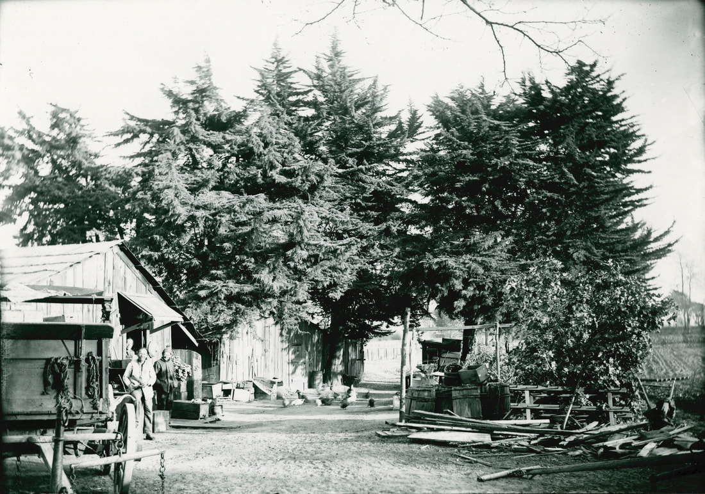 The Boycott failed to drive all Chinese from the county, although it did reduce the
Chinese population. The remaining Chinese congregated in urban "Chinatowns" in Sebastopol and Santa Rosa. Violence in rural areas put an end to "China Camps" like the one shown above, that once could be found on the outskirts of most small towns like Bloomfield. This Chinese camp was photographed in Alameda in 1897. (California State Library)
Violence Among the Chinese
As the Chinese defended themselves more often in the late 1880s, the reports of violence against them declined, and for good reason. Hoodlums were less eager to attack someone carrying a weapon or risk a fair fist fight. On the other hand, violent incidents between Chinese combatants became more common. And significantly, even editor Thomas Thompson learned a few proper Chinese names when trying to keep track of these sometimes complex altercations. A Chinese brawl occurred in the vicinity of Second and D streets Sunday evening, which did not conduce to the peace and quiet of the Sabbath in that neighborhood. Ah Wong, Ah Yo, Ah Luke and Ah Jon are Celestial names, the latter being the object of the combined attack of the other three. He was beaten in a frightful manner about the head and face, and, he claims, was robbed of $l02.25 in five twenty-dollar gold pieces, two silver dollars and a quarter of a dollar. Ah Jon’s assailants were arrested on a warrant sworn out by him Monday morning and taken before Justice Brown. One of the prisoners is familiarly known by the title of “Hoodlum Jim,” and speaks English fluently, and is otherwise better educated than the average Chinaman. He acted as interpreter for his colleagues and asked to have their examination set for Wednesday, which was complied with. Their bail was fixed at $1000 each, which, it is needless to say, was not furnished.(152) Following the exodus from Bloomfield in 1886, refugees moved to nearby cities, expanding the populations there and sparking periodic battles like the one waged in Sebastopol in December 1887: A riot occurred among the Chinese of Sebastopol, Sunday afternoon, which at first looked as if it might terminate seriously for those concerned. The opposing factions were armed to the teeth with every conceivable form of weapon, from a meat-cleaver to a Winchester rifle. Outside influence was brought to bear and a more serious outbreak was averted.(153) In January 1891: Choy Yang and Yan Ching, two Chinamen of Sebastopol, had some trouble about a new Joss house which was being built there, Monday morning, and Ching shot Yang in the back. The bullet was from a 44 calibre revolver, and passed entirely through the body, lodging under the skin of the abdomen. Dr. Pierce extracted the bullet, but the wound was mortal…The Chinamen who knew of the shooting at first told the officers that the murderer, Yan Ching, had made his escape, but after Yang's death they grew nervous and pointed Ching out to the Constable, who arrested him and brought him to the county jail on the afternoon train. Ching is as silent as the voice of his victim, and would have nothing to say to the officers beyond the assertion that he was not the man who did the killing.(154) As the 1890s progressed reports of violence among the Chinese in Sonoma County began to mention "highbinders", a name for Chinese gangsters that some say refers to a Chinese gang in New York in the mid-1800s, and others say refers to a way of binding the bottom of pant legs, a convenient place to stash weapons. These incidents involved burglary, large-scale opium seizures, gambling, and the sex slave trade. Some of the highbinders were from San Francisco, traveling to Sonoma County with nefarious intent.(155) The currents of conflict within the Chinese community became evident again in January 1899 when Ong Foon was arrested for the murder of Ah Loy in Santa Rosa seven years before. According to reports in the paper, this false charge was brought by the Wong faction, associated with the Bing Kong Tong, who were involved as sex slave dealers and "divekeepers". Ong Foon was a target because he acted as an investigator for the Chinese Educational Society, which did everything it could to stop the proliferation of the sex slave trade. The director of the Educational Society, Hong Sing, a San Francisco Chinatown merchant, was also targeted by the Bing Kong Tong, which tried unsuccessfully to murder him. Ong Foon was later acquitted but not until a spectacular trial attended by many Santa Rosans ran its course. There were scores of witnesses, including Mrs. Lake, Matron of the Methodist home in San Francisco for the rescue of Chinese slave girls and Fannie Brown, Madame of a Sacramento bordello, both testifying in Ong Foon’s defense.(156) A week after the great Sebastopol Chinatown fire of 1899 (see below) the town was in an uproar after a street shootout in front of the store of Jim Gee (Ging Gee). Gee’s brother Ah Yun Gee, lay dead, shot several times, and another unidentified man was severely wounded. Jim Gee, who had been in business in Sebastopol for 13 years, was arrested and charged with the murder of his brother. The officer also arrested another man named Lo Mon, charged with being an accessory to the crime. The men offered no resistance, although one tried to get away. The dispute involved Jim Gee's winnings from a lottery ticket. His brother, a reputed highbinder and murderer, tried to get some of the money.(157)
Accommodation and Assimilation
Bloomfield was not the only Sonoma County town to drive out its Chinese population. Windsor for example, also drove its Chinese residents out at one time in February 1886, but that only affected a few individuals.(158) Other towns also held their anti-Chinese meetings and appointed their anti-Chinese committees. Many Chinese did leave, but many also stayed. Some Chinese residents of Santa Rosa, determined to stick it out, survived the lean times by foraging for edible plants.(159) Although editor Thomas Thompson reported day after day, week after week, month after month about these meetings and the longed for Chinese exodus in general, the racist fever inevitably began to subside and the Chinese in Sonoma County looked less threatening to the Caucasians. The residents of Guerneville grew fond of one of their resident Chinese businessmen and tried to protect him during the terrible violence of the 1880s. A Chinese man who ran a wash house there claimed his name was Jim Mahoney (sometimes Maloney). Jim, whose real name was probably Ah Gee, worked for a company named Sing Lee, and insisted that his new name indicated that he was Irish. This was accepted in good humor by the lumbermen of Guerneville who seemed to befriend him. When Jim was brutally beaten by four drunken Italians in January 1886 during the retaliatory actions after the Wickersham murders, two of his attackers, Antonio Leonardo and Antonio Steofino, were taken to court. Jim was represented by well known attorney A. B. Ware, and the Italians were fined $100 each, an unprecedented victory at the time.(160) A few months later, Jim reportedly cut off his own queue and purchased a plug hat, which he wore around the streets of Guerneville, allegedly the only Chinese citizen left there. Thompson presents Jim’s assimilation in a benign light. The editor of Healdsburg’s Russian River Flag had a distinctly different perspective. He claimed that a group of "the boys" (anti Chinese agitators, or "Boycotters") forced Jim to drink whiskey, and when drunk, forced him to cut off his queue: …Before he gained his lost paganism [sobered up] he severed the queue that bound him to his race and religion; all next day he brooded over his folly, and cried nearly all next night about it. During the recital of these facts Jim stood by grinning and blinking his almond eyes in a regretful sort of way, mingled with a look of mute grief. “Poor fellow," said our friend, “he is now ostracized by his race. Chinamen do not recognize him any more, and so we must now take care of him’’ —a good sentiment we thought. Jim was then introduced to us as Mr. Maloney, of Guerneville. “Jim Maloney,” is the Christian name for Ah Gee. ’ We received his proffered shake (and it was warm and wholesouled) as the Hiberno-Chiro grip of the friend of our friend. We then left, pondering over the manner of Jim’s (res)cue from the boycotters. Jim Mahoney survived, but at a great price. Two years later Jim was described as "thoroughly American" and was learning to write a fine business hand.(161) Due to the increasing interest of his readership, Thomas Thompson found himself obliged to report the exotic activities of the permanent Chinese population of Santa Rosa by late 1889, refreshingly free of venomous asides. A Mongolian Ceremony. The Chinese of Second street celebrated Wednesday evening in honor of their dead. The spot selected for the ceremony was in front of the Joss house. A roast pig, cooked chicken, rice, tea and several varieties of fruit and vegetables were arrayed on the ground and about them were placed floral decorations and lighted tapers. The officiating Chinaman made a ring of fire out of paper around the refreshments, and after it had been allowed to burn awhile it was extinguished and the pig, chicken and fruit were distributed among those who engaged in the rites.(162) A significant time for many Chinese born in the United States came in December 1993 when Sonoma County resident Lung Shev, a native of San Francisco, filed the first citizenship petition with the Sonoma County Clerk. Shev wanted to establish bis citizenship so that he could visit China and return without trouble and his petition was granted. Thereafter regular reports appear of long-time California residents, natives of China, returning to visit their home country.(163) Starting in February 1894 many Chinese residents wanted to register with the Internal Revenue Service. Some of them had lived in the county for over 20 years.(164) Some kind of benchmark had been reached by 1898 when it was considered fashionable for a group of proper Caucasian girls to take in the celebration of the Chinese New Year in Santa Rosa’s Chinatown. They appeared to enjoy the strange diversions very much.(165) The next year these diversions became the main attraction for official paid tours of Santa Rosa’s Chinatown during its New Year celebration. A Press Democrat reporter accompanied one such group tour in February 1899, when visitors were able to walk through the homes of prominent Chinatown merchants observing New Year preparations and receiving candy and nuts for the ladies, and cigars for the gentleman. At the home of influential Second Street Merchant, Tom Wing (Tong Wing Wong), the main attraction was his third wife, Toy Lou Wong.(166) 
Young bride and groom in 1875, Brewster photo (Ventura Museum)
Chinese Women in California
In the 19th Century there were very few Chinese women in California. This was especially true in rural areas. Many observers have pointed to the scarcity of women as the reason for the high incidence of gambling, addiction, mental illness, and suicide in the mostly single, male, Chinese population in California prior to 1906. Families in China discouraged or forbade young women from immigrating, and city officials in San Francisco often deported them. The former feared for their daughters' virtue and safety. Chinese tradition called on a woman to care for and serve her inlaws. City officials often claimed that only prostitutes were imported from China, and so tried to send them back when they did arrive. There are other theories about the cause of the scarcity, but the fact remains that Chinese women were rare and therefore an enduring novelty in the state. In 1894 two Chinese women visiting Healdsburg drew this response: Two Chinese women came up to Healdsburg last Thursday morning and they were princely entertained by their gallant hosts. Almond-eyed females are rarely seen here and their presence made them feel prominent, for no one passed them without scrutinizing them carefully and interestedly.(167) Only the wealthiest Santa Rosa Chinese merchants could afford to import a wife from China. In December 1894: Le Yuen, a merchant on Main street, this city, of the firm of Young, Fat, Yuen & Co. is about to make a visit to China with a view of getting a Chinese wife and returning here next year. He carries with him certain certificates which have been prepared by O. H. Hoag. Le Yuen leaves on the next steamer. (168) Because of the competition for mates, romance in Chinatown could be fraught with intrigue and tragedy. One such case was Doon Kee, who had successfully run a grocery store in Santa Rosa since 1874. By the early 1890s Kee was prosperous enough to find a wife among the few Chinese females in California. All went well and the couple had two children. In 1893 Doon Kee became sick and was told he was going to die by a doctor in San Francisco. His doctor said his only chance of recovery was a change of climate. Doon Kee told his wife he would have to return to China, and if he got no better she could sell the grocery business, worth about $1,000, collect another $500 owed him, and join him with the children in China if the worst was to happen. Doon Kee sailed in 1893, leaving his wife in charge of his estate. Kee did seem to recover his health in China, and some hint that Kee’s absence from his wife may have contributed to that recovery. Doon Kee arrived back in San Francisco in late 1895, and his wife and children met him. He had some difficulty in landing, but was well known to many people here and was so passed in without a certificate. However the residents of Chinatown knew very well that during Doon Kee’s China sojourn, his wife had kept company with a Chinese merchant named Charley Kern (or Kan). Soon after Kee’s return, Kern wrote a letter to immigration officials and told them that Doon Kee was no merchant, that he kept an opium joint and did other nefarious things, that he had entered the U. S. illegally, and ought to be arrested and deported. At about the same time Mrs. Kee left for Napa to visit friends. In April 1896 Doon Kee was arrested and the same day Kern withdrew his money and all else Mrs. Kee had not already taken from her husband, and disappeared. Fortunately Doon Kee was well known to many white and Chinese businessmen in San Francisco and Santa Rosa who spoke on his behalf at a court hearing, and he was released. Residents of both San Francisco and Santa Rosa Chinatowns were gleeful when Charley Kern was found and arrested in Siskiyou County in June 1896, while living with Mrs. Kee. As the Deputy Sheriff had no warrant for the woman’s arrest, only Charley Kern was returned to Santa Rosa. I find no evidence of the fate of the runaway lovers, but Doon Kee stayed in business in Santa Rosa for many years.(169) Another prosperous Chinese Californian’s bride arrived on the train at Donahue near Petaluma in December 1897. Chinese women were still such a novelty that she drew a huge crowd of curious onlookers at the depot. Please note that the reporter below has lapsed into using no names in this otherwise detailed account, indicative of his personal prejudice, exhibited in his language. “A Chinese bride! A Chinese bride!” The word was passed like wildfire among the crowd at the Donahue depot as the ten o’clock train on the San Francisco and North Pacific Railroad showed up there Wednesday morning. Instantly everybody was anxious to catch a glimpse of the celestial maiden, clad in the most fantastic of bridal costumes, had Queen Victoria or the Czar of Russia arrived unexpectedly, it is doubtful if more attention would have been given them for the moment. As it was everybody, lawyers, doctors, reporters, policemen, hotel clerks, hack drivers, newsboys, all crowded around the steps of the smoker to see m’lady alight. Pretty soon what seemed to be nothing more than a big red bundle of clothes, lifted and handed round by four other stout celestial maidens, came through the doorway. This bundle was the Chinese bride…On her head was a kind of arrangement shaped like a coronet, dependent from which were decorations of gold lace, beads, etc. A heavy veil was over her face, or rather she was clad in a bright scarlet costume which completely enveloped her so that she could not see anything. Her attendants, each of whom carried a little stick on which was tied a bunch of red ribbons, assisted her to climb down the steps. …Once on the platform one of the largest of the women attendants…grabbed the bride-to-be rather unceremoniously by the shoulders and “ran” her into the depot waiting room. The party were bound for Sebastopol and the process of loading the bride onto the cars was watched with much interest by the crowd on the platform. When the bride and her party arrived at Sebastopol they were given a great reception by scores of Chinese. In a gaily decorated vehicle adorned with flags and Chinese lanterns, the bride was escorted through the streets. Later in the day the marriage took place amid much pomp. The groom was a “heap high tone” Chinaman employed on the Knowles ranch near Sebastopol.(170)
The Many Brides of Wong Tong Wing
In June 1898 well known Santa Rosa Second Street merchant Wong Tong Wing (also called Tom Wing and Tom Wing Wong) returned home triumphantly with his young bride after their wedding in San Francisco’s Chinatown. Only a month later this bride, Lo Kane, became mortally ill in San Francisco and died of tuberculosis soon after her return to Santa Rosa. It must be inferred that the young woman was extremely ill at the time of her marriage. By January 1899, Wong had found another bride, Toy Lou, a reported beauty, and it is then that we are informed by the press that he had two previous brides, the first one taking her own life by suicide. Wong had apparently made use of a marriage broker for these unions. A few weeks after his third marriage Wong was asked why he didn’t obtain a marriage license for the most recent union. He allegedly claimed that he thought the Western marriage license brought him bad luck in his first marriage, that he did not want to get one for his second marriage, but was persuaded to do so by local officials. So he refused to repeat his mistake a third time, and married Toy Lou under Chinese law only.(171) Tom Wong came to San Francisco as a teenager from Canton. He worked in a shoe factory and first came to Sonoma County to pick hops. Soon he became a labor contractor, bringing in other Chinese workers. Later he would take a fourth wife, Lun Moon Wong. Various family members later worked in or owned a wide variety of enterprises including agriculture, flour mills, cooks, a laundry at Second and D Streets, making brandy at Chauvet Winery, and later proprietors of the Jam Kee Restaurant in two locations in Santa Rosa. According to his daughter, Song Wong Bourbeau, Tom Wong made his own whiskey and entertained Frank P. Doyle, Luther Burbank, and Henry Ford. In the winter, when there was little agricultural work, he ran fan tan games. Chinatown’s most prominent businessman, he was sometimes called the Mayor of Chinatown. Tom Wing Wong died in the 1918 flu epidemic. His daughter, Song Wong Bourbeau donated many family items to the Sonoma County Museum. Song, born in 1909, testified to the continuing scarcity of Chinese women in Sonoma County in the 20th Century: My dad brought all these men over. There was no, no women. My mother was the only woman. She did all the cooking…for the roomers and the boarders.(172) 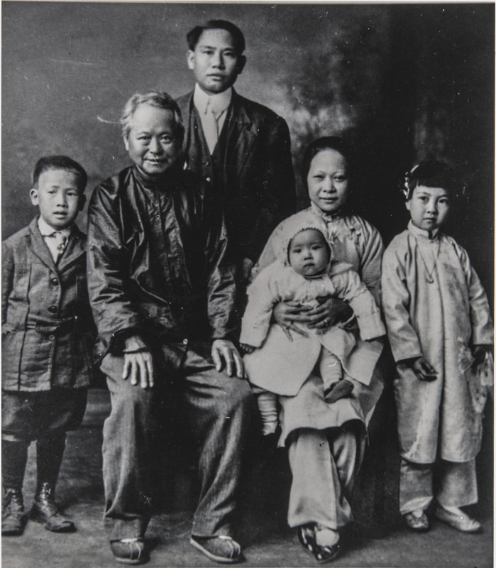 Tom (Tong) Wing Wong family. Tom is seen here with his fourth wife, Lun Moon, and daughter Song Wong Bourbeau at far right, circa 1916. (Sonoma County Library)
 Healdsburg Tribune, Enterprise and Scimitar 24 December 1896 (1-5) Healdsburg Tribune, Enterprise and Scimitar 24 December 1896 (1-5)
Cycles of Violence
Although conditions for the Chinese in Sonoma County steadily improved in the waning years of the 19th Century, the cycle of abuse of the Chinese who did not or could not defend themselves continued. Young ruffians occasionally mercilessly beat Chinese citizens, often for sport. Although they would be arrested, the Caucasian assailants were generally released with a $20 fine.(173) However one horrific incident in Petaluma in 1894 turned the eyes of Sonoma County on this long-established pattern, and for a time at least, the ritual abuse of the Chinese abated. On Saturday afternoon March 31, 1894, Wan Sing (also called Wong Sing), a Chinese laundryman in Petaluma, was fishing from McNear’s wharf, seated on an inverted bucket. When young George Conniff came along he thought it would be funny to push Wan Sing into the creek. Sing was paying close attention to his line and did not notice the boy approach. Sing reportedly gave a piercing shriek that ended in a gurgle as his head was submerged in deep water. Wan Sing could not swim. He came to the surface once and then receded under the rippling current of Petaluma Creek. When Sing’s body was found later an iron rod projecting from the piling of the wharf held one of his loose trousers legs, which the press thought accounted for the body not rising more than once. Conniff ran from the scene and was not found until some time later. Two separate inquests were held, one by Coroner Ungewitter, and another ordered by Justice Scudder, and many witnesses were examined. The separate inquests might have indicated a conflict over the Chinese victim and Caucasian defendant, although both concluded that Conniff was at fault. Coroner Ungewitter published a formal letter of protest over the affair. Conniff was arrested on a charge of manslaughter and held at $10,000 bail. At the trial that October there was much discussion between the judge and jury regarding Conniff’s intent, as the defendant’s attorney tried to assert that the youth never intended serious injury to Wan Sing. Nevertheless the jury found George Conniff guilty, but recommended mercy. He was sentenced to 15 months in San Quentin.(174) Arson fires, like the ones set by the Second Street Gang, continued to plague Chinese shop owners. One of the largest happened in Healdsburg in March 1895. It torched Jo Wah Lee’s laundry, T.L. Neely’s paint store above it, and threatened the entire commercial district. In this instance the evidence of arson was clear, but the targets may have been the owners of the paint store, T. L. Neely, and George Michaels, proprietor of the adjoining Sotoyome Stables. A. H. Clyma was publicly accused of having a grudge against Neely and the stable and threatening them. Clyma it seems was well connected, had an alibi, and was acquitted just a week later for lack of evidence. Yet it was Jo Wah Lee who lost everything: his laundry, all his possessions, and $100 in paper currency. Several month later it was discovered that Lee, who by that time had become a Healdsburg institution, had a worthless insurance policy, purchased from a shyster dealer. By December 1896 Jo Wah Lee had reopened his business next to City Hall on Center Street, his original location. Close readers will remember that Jo Wah Lee was forced outside the city limits by city ordinance in 1888, putting up a stiff but ultimately unsuccessful legal battle in the courts.(175) A fire in Sebastopol’s Chinatown set a new precedent for destructive arson. On Monday, May 1, 1899, at about 8 a.m., a fire was spotted on the roof of a grocery store kept by Sung Tai. It quickly spread and consumed most of the structures making up the neighborhood. …The places destroyed included stores, dwelling houses and the Chinese joss house and their Masonic hall. The buildings were light and airy, and consequently were soon reduced to ashes. …The buildings destroyed were occupied by Sung Tai, Wig Hop, Wah Lee, Sig Wah, Hop Wah, Hung Wah, Quong Wah, Hung Chung, Hong Fat, Ling Fat, Way Sing, Fee Kee, Chung Hi, Chung Chun and others. To estimate the loss to the Chinese would he a difficult task, as they value their property very highly One of the Chinese merchants places his total loss at about $15,000. The buildings wore the property of H. S. Barnes, one of the legatees of the estate of the late Aaron Barnes. His loss will be about $2000. The misery of the occupants, some of whom lost everything, was described, but callousness was also evident in the amused report of little white boys excitedly sifting through the ashes for the Chinese victims' treasures, in one case a boy finding a $5 gold piece.(176) While such probable arson and senseless violence continued, there were also slight improvements as the century waned. It can be taken as a positive development that a lecture by the Honorable F. X. Schoonmaker, about the Chinese culture drew a huge crowd and front page reporting in Healdsburg in October 1899. Although Schoonmaker’s talk was no doubt laced with prejudice and condescension, his intent was good: …Mr. Schoonmaker’s repertoire consists of seven lectures on China and the Chinese, the others being on “The Religion of Christianity Contrasted With the Morality of Confucius,” “The Literature and Art of China,” “Christ and Confucius,” “The Kind of Man Produced by Chinese Civilization,” etc. In his talk Thursday night the lecturer explained the difficulties travelers have in drawing correct inferences about strange peoples from the hasty observations made in journeying among them.(177) Prejudice and intolerance did not end with that century, or the century that came after it. Violence against Chinese or other Asians by Caucasians in Sonoma County would ebb and flow in a repeating cycle, decade after decade. Racial hatred seems to be an ever-strung arrow in some hearts that is always seeking a target. Bringing the 19th Century to a close, this odd item appeared on December 30, 1899: John Meagher, the Valley Ford Irishman who dresses as a Chinaman, talks the language and conducted a laundry in approved Chinese style, has gone out of the laundry business for a while, according to the statement of a well known resident of that place. He is now engaged as a cook, an occupation he likes equally as well as washing. Not long since a reporter from the city paid a visit to Mr. Meagher’s laundry at Valley Ford and found him filling the role as above described. He gave his reason for discarding the dress of a white man because it helped him in his business.(178) A generation earlier, a Chinese laundryman in Guerneville, Ah Gee, changed his name to Jim Mahoney, sacrificed his queue and his connection to his ancestors, and pretended he was Irish to save himself and his business. By the end of the century an Irishman in Valley Ford impersonated a Chinese laundryman and learned to speak Chinese because it was good for business. I am still thinking about what this means. 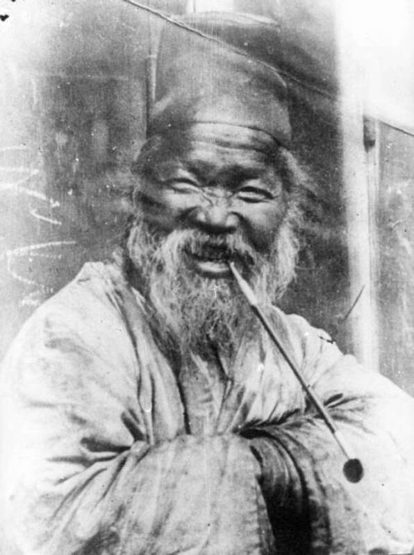 Unidentified resident of Oroville, California, laughs at a photographer, circa 1880. (Meriam Library, Chico State University)
Endnotes
1. Sonoma Democrat, Volume XXX, Number 42, 6 August 1887 (3:6). 2. California Star, (Yerba Buena) Volume 1, Number 6, 13 February 1847 (1:3). Weekly Alta California, Volume I, Number 28, 12 July 1849 (2:3). Weekly Alta California, Volume I, Number 46, 15 November 1849 (1:3). 3. Daily Alta California, Volume 1, Number 114, 11 May 1850 (2:1). 4. Daily Alta California, Volume 1, Number 192, 11 August 1850 (2:2). 5. "Latest from the Celestials", Daily Alta California, Volume 1, Number 192, 11 August 1850 (2:2). https://en.wikipedia.org/wiki/Chinese_Consolidated_Benevolent_Association 5a. McGinty, Brian. Strong Wine, the Life and Legend of Agoston Haraszthy. Stanford: Stanford University Press, 1998. 6. "Letter from Petaluma" Sonoma Democrat, Volume III, Number 44, 16 August 1860 (2:3)). 7. Sonoma Democrat, Volume XVIII, Number 38, 10 July 1875 (1:1). 8. "Condition of the State," taken from the Sacramento Bee; Russian River Flag, (Democratic Standard) Volume I, Number 14, 3 January 1866 (5.1). 9. There are many sources for Sonoma County census figures. I used official U.S. Government sources and relied on search tools for census data provided on the website Ancestry.com. 10. Russian River Flag, Volume II, Number 13, 26 December 1866. John B. Fitch was the son of Capt. Henry Delano Fitch and Josefa Carrillo Fitch, original owners of the Rancho Sotoyome Mexican land grant. (see: A San Diego Landlord: Henry Delano Fitch, on this website). Fitch traded land he had inherited for the newspaper and had a troubled later life. As someone who undoubtedly experienced prejudice personally, he would sympathize with the plight of the Chinese. 11. Sonoma Democrat, Volume XII, Number 45, 14 August 1869(4:2). 12. Russian River Flag (Democratic Standard), Volume II, Number 25, 21 March 1867(1:2). 13. Ukiah: Russian River Flag, Volume I, Number 51, 4 November 1869 (2:5). Healdsburg: Russian River Flag, Volume II, Number 1, 18 November 1869 (2-4). Bloomfield: Russian River Flag, Volume II, Number 4, 9 December 1869 (3:3). 14. Russian River Flag, Volume II, Number 43, 8 September 1870 (2:2) 15. "Klu Klux Klan", Russian River Flag, Volume III, Number 12, 2 February 1871 (3:3). 16. Sonoma Democrat, Volume XVIII, Number 10, 12 December 1874(4:2). 17. Russian River Flag, Volume VII, Number 44, 9 September 1875 (3:2). 18. Press Democrat, Volume I, Number 70, 20 October 1875 (3:3). 19. Sonoma Democrat, Volume XVII, Number 49, 12 September 1874(1:1). 20. Healdsburg Enterprise, Volume III, Number 40, 7 November 1878(3:5). 21. Russian River Flag, Volume II, Number 34, 7 July 1870 (3:2). Russian River Flag, Volume III, Number 46, 28 September 1871 (3:2). 22. Russian River Flag, Volume V, Number 22, 10 April 1873(3:3). 23. Russian River Flag, Volume V, Number 36, 17 July 1873 (3:3). 24. Sonoma Democrat, Volume XIX, Number 34, 10 June 1876(5:1). 25. Sonoma Democrat, Volume XIX, Number 49, 23 September 1876(12:1). 26. Russian River Flag, Volume IV, Number 10, 18 January 1872 (2:3). 27. "Hoodlumism", Russian River Flag, Volume V, Number 47, 2 October 1873(3:1). "A Mean Trick", Russian River Flag, Volume V, Number 49, 16 October 1873 (2:1). "More Hoodlumism", Russian River Flag, Volume VI, Number 4, 4 December 1873 (3:1). "Severely Beaten", Press Democrat, Volume V, Number 127, 3 July 1878 (3:1). 28. Sonoma Democrat, Volume XV, Number 12, 30 December 1871(5:2). 29. Dr. William Shipley, Tales of Sonoma County, Sonoma County Historical Society, pg. 56. 30. Press Democrat, Volume V, Number 80, 9 May 1878 (3:1). 31. Sonoma Democrat, Volume XXI, Number 52, 19 October 1878 (5:4). 32. Sonoma Democrat, Volume XIX, Number 30, 13 May 1876 (5:2). 33. "Chinaman Shot" Russian River Flag, Volume IV, Number 43, 5 September 1872(3:1). "Stabbed by a Chinaman", Russian River Flag, Volume VI, Number 10, 15 January 1874(2:5). "A Row in Camp", Russian River Flag, Volume VI, Number 45, 17 September 1874 (3:1). Jose Molino hits Chinaman with rock, Sonoma Democrat, Volume XX, Number 52, 20 October 1877 (5:5.). "Another Shooting Affray", Press Democrat, Volume IV, Number 223, 22 October 1877 (3:1). "Chinaman Injured" Press Democrat, Volume IV, Number 279, 28 December 1877 (3:1). Sonoma Democrat, Volume XXI, Number 11, 5 January 1878 (5:2). 34. Sonoma Democrat, Volume XXI, Number 41, 3 August 1878 (5:5). 35. Press Democrat, Volume V, Number 127, 3 July 1878 (3:1). 36. Press Democrat, Volume VI, Number 92, 18 November 1878 (3:1). 37. Russian River Flag, Volume XIII, Number 16, 17 February 1881 (2:3). 38. Press Democrat, Volume VII, Number 96, 7 June 1879 (3:1,2,3). Sonoma Democrat, Volume XXII, Number 34, 14 June 1879 (8:1). 39. Sonoma Democrat, Volume XXII, Number 35, 21 June 1879(5:4,5) EXAMINATION OF CHARLES JONES. 40. Ibid. Workingmen’s Party: Sonoma Democrat, Volume XXI, Number 22, 23 March 1878 (8:1). 41. Press Democrat, Volume VII, Number 96, 7 June 1879 (3:1,2,3). DeTurk Winery Cultural Resource Inventory Form: http://santa-rosa.granicus.com/MetaViewer.php?view_id=20&clip_id=828&meta_id=93031. 42. Russian River Flag, Volume IX, Number 11, 18 January 1877 (2:3). 43. Press Democrat, Volume IV, Number 82, 9 May 1877(3:2). 44. Russian River Flag, Volume XII, Number 46, 16 September 1880 (3:2). 45. Sonoma Democrat, Volume XXVI, Number 18, 17 February 1883 (3:1). 46 United States Congress. "Thomas Larkin Thompson (id: T000219)", Biographical Directory of the United States Congress. 47. Press Democrat, Volume VII, Number 12, 15 February 1879 (3:2). 48. Russian River Flag, Volume XIII, Number 6, 9 December 1880 (1:6). 49. Sonoma Democrat, Volume XIX, Number 52, 14 October 1876(5:4). 50. Sonoma Democrat, Volume XXIII, Number 19, 28 February 1880(5:1). 51. Sonoma Democrat, Volume XXIII, Number 22, 20 March 1880(5:2). Sonoma Democrat, Volume XXIII, Number 20, 6 March 1880 (5:2). 52. Dr. William C. Shipley, Tales of Sonoma County, Sonoma County Historical Society, 1965, pg. 56. 53. Sonoma Democrat, Volume XVIII, Number 30, 15 May 1875 (5:2). 54. Sonoma Democrat, Volume XIX, Number 25, 8 April 1876(4:5). 55. Sonoma Democrat, Volume XX, Number 32, 2 June 1877(5:5). 56. Sonoma Democrat, Volume XX, Number 10, 30 December 1876(5:5). 57. Russian River Flag, Volume IX, Number 38, 26 July 1877(3:3). 58. Sonoma Democrat, Volume XX, Number 43, 18 August 1877(1:5). 59. Healdsburg Enterprise, Volume III, Number 10, 11 April 1878 (3:1). 60. Healdsburg Enterprise, Volume III, Number 9, 4 April 1878 (3:4). 61. Sonoma Democrat, Volume XXI, Number 40, 27 July 1878 (8:2). 62. Russian River Flag, Volume XIV, Number 28, 11 May 1882 (3:1). 63. Russian River Flag, Volume XIV, Number 45, 7 September 1882 (3:8). 64. Sonoma Democrat, Volume XXV, Number 39, 15 July 1882(2:4). 65 Sonoma Democrat, Volume XXVI, Number 1, 21 October 1882 (3:1). 66. Sonoma Democrat, Volume XXIX, Number 1, 24 October 1885 (6:1). 67. Matheson Letter 5 Aug. 1849, Healdsburg Museum. 68. Russian River Flag, Volume VII, Number 51, 28 October 1875 (3:4). 69. Sonoma Democrat, Volume XXIV, Number 50, 1 October 1881(3:7). 70. Dr. William Shipley, Tales of Sonoma County, Sonoma County Historical Society, 1965, p. 55. 71. Sonoma Democrat, Volume XV, Number 48, 7 September 1872 (4:5). Russian River Flag, Volume IV, Number 43, 5 September 1872 (3:1). Russian River Flag, Volume IV, Number 48, 10 October 1872 (3:2). 72. Sonoma Democrat, Volume XIX, Number 50, 30 September 1876(1:5). 73. Sonoma Democrat, Volume XIX, Number 46, 2 September 1876 (5:3). 74. Press Democrat, Volume IV, Number 276, 24 December 1877 (3:1). 75. Sonoma Democrat, Volume XXVI, Number 18, 17 February 1883 (3:3). 76. Sonoma Democrat, Volume XXVI, Number 33, 2 June 1883(3:5). 77. Russian River Flag, Volume XV, Number 51, 18 October 1883 (3:2). 78. Russian River Flag, Volume XV, Number 52, 25 October 1883 (3:2). 79. Sonoma Democrat, Volume XXVII, Number 2, 27 October 1883 (3:4). 80. Sonoma Democrat, Volume XXIX, Number 5, 21 November 1885 (1:5) Sonoma Democrat, Volume XXIX, Number 8, 12 December 1885 (1:5). 81. Sonoma Democrat, Volume XXVII, Number 29, 3 May 1884 (1:5). 82. Sonoma Democrat, Volume XXVIII, Number 52, 17 October 1885 (1:3). 83. Sonoma Democrat, Volume XXVIII, Number 38, 11 July 1885 (3:4). 84. Press Democrat, Volume XI, Number 158, 7 January 1886(3:3). 85. Sonoma Democrat, Volume XXIX, Number 12, 9 January 1886 (3:1). 86. Sonoma Democrat, Volume XXIX, Number 46, 4 September 1886 (3:5). 87. Healdsburg Tribune, Enterprise and Scimitar, Volume 1, Number 46, 2 February 1889 (4:4). 88. Sonoma Democrat, Volume XXX, Number 40, 23 July 1887(3:1). Press Democrat, Volume XV, Number 11, 26 July 1888 (3:2). Press Democrat, Volume XV, Number 13, 28 July 1888 (3:2). Press Democrat, Volume XV, Number 15, 31 July 1888 (3:1). Press Democrat, Volume XV, Number 15, 31 July 1888 (3:1). 89. Healdsburg Tribune, Enterprise and Scimitar, Volume 1, Number 37, 1 December 1888 (5:3). 90. Sonoma Democrat, Volume XXIX, Number 14, 23 January 1886 petition (3:2), meeting (3:3), murder (2:5). Press Democrat, Volume XI, Number 172, 23 January 1886 (3:1). 91. Munro-Fraser, History of Sonoma County, Alley, Bowen & Co., 1880, p. 603. findagrave.com Jesse C. W and Sarah A. Wickersham, Cypress Hill Memorial Park Cemetery, Petaluma, CA. 92. Press Democrat, Volume XI, Number 173, 24 January 1886 (3:2) (2:2). Press Democrat, Volume XI, Number 174, 26 January 1886 (3:2) (2:1). Russian River Flag, Volume XVIII, Number 13, 27 January 1886 (3:3). Press Democrat, Volume XI, Number 175, 27 January 1886 (3:2). Sonoma Democrat, Volume XXIX, Number 15, 30 January 1886 (1:6,7). Russian River Flag, Volume XVIII, Number 14, 3 February 1886 (1:3,4). 93. Sonoma Democrat, Volume XXIX, Number 15, 30 January 1886 (2:6) (3:5). Press Democrat, Volume XI, Number 178, 30 January 1886 (4:1) (1:7). 94. Sonoma Democrat, Volume XXIX, Number 23, 27 March 1886 (4:2). 95. Russian River Flag, Volume XVIII, Number 22, 31 March 1886 (3:5). Sonoma Democrat, Volume XXIX, Number 24, 3 April 1886 (1:3). Press Democrat, Volume XI, Number 232, 3 April 1886 (2:2). Sonoma Democrat, Volume XXIX, Number 25, 10 April 1886 (1:7). Daily Alta California, Volume 40, Number 13383, 18 April 1886 (5:4). Sonoma Democrat, Volume XXIX, Number 27, 24 April 1886 (3:1). 96. San Jose Herald, Volume XL, Number 98, 28 April 1886 (2:2). 97. Sonoma Democrat, Volume XXIII, Number 27, 24 April 1880 (5:2). Press Democrat, Volume XI, Number 177, 29 January 1886 (2:1). 98. Press Democrat, Volume XI, Number 174, 26 January 1886 (2:1). 99. While working on the original article on this subject, The Chinese in Healdsburg in 1992, I distinctly remember seeing Luther Burbank’s name along with many others at the bottom of an anti Chinese resolution in an 1886 newspaper in the museum archives. I cannot find that issue now, so many years later, in the online archive, but Burbank is listed as a member of an anti-Chinese League ward committee in the neighborhood of his home in Santa Rosa, in the following issue: Sonoma Democrat, Volume XXIX, Number 17, 13 February 1886 (4:1). 100. Russian River Flag, Volume II, Number 4, 9 December 1869 (3:3). 101. Sonoma Democrat, Volume XII, Number 25, 27 March 1869 (5:2). 102. Russian River Flag, Volume VII, Number 49, 14 October 1875 (3:4). 103. Dirt Roads and Dusty Tales, A Bicentennial History of Bloomfield, Hannah Clayborn, 1976. 104. "Letter from Bloomfield", Sonoma Democrat, Volume XX, Number 9, 23 December 1876(5:4) . 1870 and 1880 Census Martin D. Stone, Thomas Gregory. 105. San Jose Herald, Volume XL, Number 25, 30 January 1886 (2:3). San Jose Herald, Volume XL, Number 25, 30 January 1886 (2:3). 106. Sonoma Democrat, Volume XXIX, Number 16, 6 February 1886 (4:1). 107. San Jose Mercury News, Volume XXIX, Number 33, 9 February 1886 (2:5). The Humboldt Times, Volume XXV, Number 39, 16 February 1886 (2:3). 108. Press Democrat, Volume XI, Number 201, 26 February 1886 (3:2). 109. Sonoma Democrat, Volume XXIX, Number 19, 27 February 1886 (2:5). 110. Sonoma Democrat, Volume XXIX, Number 19, 27 February 1886 (2:5). Sonoma Democrat, Volume XXIX, Number 20, 6 March 1886 (2:5). Press Democrat, Volume XI, Number 207, 5 March 1886 (2:2) (2:3). "Archaeology and a Hoag House Mystery", Mary and Adrian Preatzellishttps://scholarworks.calstate.edu/downloads/ws859g50n?locale=en. 111. San Jose Mercury News, Volume XXIX, Number 58, 10 March 1886 (3:5). Morning Union, Volume 37, Number 6735, 13 March 1886 (2:2). 112. Santa Cruz Sentinel, Volume 4, Number 128, 14 March 1886 (7:4). 113. Daily Alta California, Volume 40, Number 13354, 20 March 1886 (6:3). 114. Sonoma Democrat, Volume XXIX, Number 52, 16 October 1886 (6:2) (3:4) (6:1). 115. Sonoma Democrat, Volume XXX, Number 1, 23 October 1886 (4:1) (3:3). 116. Daily Alta California, Volume 41, Number 13575, 30 October 1886 (5:3). Sacramento Daily Union, Volume 56, Number 60, 30 October 1886 (1:3). San Bernardino Daily Courier, Volume 1, Number 19, 30 October 1886 (2:2). Daily Alta California, Volume 41, Number 13573, 28 October 1886 (5:4). Russian River Flag, Volume XIX, Number 1, 3 November 1886 (3:1). 117. Sacramento Daily Union, Volume 56, Number 76, 18 November 1886 (4:3). 118. Weekly Butte Record, Volume 34, Number 7, 20 November 1886 (2:5). 119. Daily Alta California, Volume 41, Number 13593, 17 November 1886 (1:4). Daily Alta California, Volume 41, Number 13594, 18 November 1886 (8:5). 120. Daily Alta California, Volume 41, Number 13596, 20 November 1886 (1:6). Russian River Flag, Volume XIX, Number 4, 24 November 1886 (3:1). 121. Sonoma Democrat, Volume XXX, Number 9, 18 December 1886 (2:4). 122. Chico Weekly Enterprise, Volume XVIII, Number 32, 24 December 1886 (1:1). 123. Sonoma Democrat, Volume XXX, Number 23, 26 March 1887 (2:1,2). 124. Marysville Daily Appeal, Volume LV, Number 139, 12 June 1887 (3:3). Sacramento Daily Union, Volume 57, Number 96, 13 June 1887 (4:3). Grass Valley Morning Union, Volume 39, Number 7122, 16 June 1887 (2:3). Napa Register (Weekly), Volume 24, Number 44, 17 June 1887(2:4). Weekly Butte Record, Volume 34, Number 37, 18 June 1887 (3:1). 125. Press Democrat 17 April 1949. 126. Napa County Reporter, Volume 32, Number 2, 15 July 1887 (3:7). Coronado Mercury, Volume I, Number 53, 16 July 1887 (2:1). 127. Sonoma Democrat, Volume XXXI, Number 1, 22 October 1887 (3:4) (3:5). 128. Sonoma Democrat, Volume XXXI, Number 2, 29 October 1887 (1:9). 129. "Robbed near Washoe House", Russian River Flag, Volume VI, Number 29, 28 May 1874 (3:3). "John Jones arrested for robbing Chinaman", Russian River Flag, Volume VII, Number 29, 27 May 1875 (2:2). "Chinaman Shot", Press Democrat, Volume I, Number 52, 30 September 1875 (3:2). "Chinaman Killed", Sonoma Democrat, Volume XIX, Number 14, 22 January 1876 (5:2). Russian River Flag, Volume IX, Number 18, 8 March 1877(3:4). "Mrs. Rose’s Watch Stolen", Russian River Flag, Volume X, Number 7, 20 December 1877(3:3). 130. Sonoma Democrat, Volume XXVI, Number 12, 6 January 1883 (3:3). 131. Sonoma Democrat, Volume XXVI, Number 25, 7 April 1883(3:3). 132. Sonoma Democrat, Volume XXIX, Number 52, 16 October 1886 (6:2). 133. Sonoma Democrat, Volume XXIX, Number 47, 11 September 1886 (2:2). 134. Sonoma Democrat, Volume XXIX, Number 48, 18 September 1886 (1:8). 135. Sonoma Democrat, Volume LX, Number 4, 12 September 1896 (6:2). Sonoma Democrat, Volume LX, Number 9, 17 October 1896 (5:4). 136. Press Democrat, Volume XVII, Number 150, 13 January 1891(1:2). Sonoma Democrat, Volume XXXIV, Number 21, 7 March 1891 (1:2) (3:3). 137. Sonoma Democrat, Volume XXIX, Number 30, 15 May 1886 (1:8). 138. Sonoma Democrat, Volume XXIX, Number 37, 3 July 1886 (1:4). 139. Russian River Flag, Volume XVIII, Number 36, 7 July 1886 (2:1) 140. Sonoma Democrat, Volume XXX, Number 45, 27 August 1887 (3:4). 141. Sonoma Democrat, Volume XXXI, Number 1, 22 October 1887 (3:5.) 142. Sonoma Democrat, Volume XXXI, Number 6, 26 November 1887(1:5). 143. Sonoma Democrat, Volume XXX, Number 33, 4 June 1887 (1:7). 144. Press Democrat, Volume XIV, Number 155, 10 January 1888 (3:1). Press Democrat, Volume XIV, Number 168, 25 January 1888 (3:1). 145. Healdsburg Tribune, Enterprise and Scimitar, Volume 4, Number 4, 12 October 1889 (2:4). 146. Healdsburg Tribune, Enterprise and Scimitar, Volume 13, Number 23, 16 August 1894 (1:8). 147. Press Democrat, Volume XVI, Number 92, 29 October 1889 (4:5). 148. Sonoma Democrat, Volume XXXI, Number 8, 10 December 1887 (1:5). 149. Healdsburg Tribune, Enterprise and Scimitar, Volume 5, Number 23, 28 August 1890 (3:5). 150. Sonoma Democrat, Volume XXXIV, Number 16, 31 January 1891(3:2). 151. Sonoma Democrat, Volume XXX, Number 40, 23 July 1887(3:1). Press Democrat, Volume XV, Number 11, 26 July 1888 (3:2). Press Democrat, Volume XV, Number 13, 28 July 1888 (3:2). Press Democrat, Volume XV, Number 15, 31 July 1888 (3:1). Press Democrat, Volume XV, Number 15, 31 July 1888 (3:1). 152. Sonoma Democrat, Volume XXX, Number 19, 26 February 1887 (1:5). 153. Sonoma Democrat, Volume XXXI, Number 9, 17 December 1887 (1:6). 154. Press Democrat, Volume XVII, Number 150, 13 January 1891(1:2). 155. Sonoma Democrat, Volume XXIX, Number 38, 10 July 1886 (3:4). Sonoma Democrat, Volume XXXIV, Number 48, 12 September 1891(1:9). Sonoma Democrat, Volume XXXV, Number 16, 30 January 1892(1:3) . Sonoma Democrat, Volume XXXV, Number 20, 27 February 1892 (6:1). Healdsburg Tribune, Enterprise and Scimitar, Volume 11, Number 29, 5 October 1893 (2:3). Press Democrat, Volume XLII, Number 62, 10 May 1899(1:5,6). 156. Press Democrat, Volume XLII, Number 31, 25 January 1899 (1:7). Press Democrat, Volume XLII, Number 37, 15 February 1899 (1:7). Press Democrat, Volume XLII, Number 47, 22 March 1899 (2:3) (4:3). Press Democrat, Volume XLII, Number 48, 25 March 1899 (3:5) (1:4) 157. Press Democrat, Volume XLII, Number 62, 10 May 1899(1:5,6). 158. Russian River Flag, Volume XVIII, Number 16, 17 February 1886(3:2). Press Democrat, Volume XI, Number 194, 18 February 1886 (3:3). 159. Sonoma Democrat, Volume XXIX, Number 27, 24 April 1886 (1:7) 160. Press Democrat, Volume XI, Number 174, 26 January 1886 (2:1) (3:3). Press Democrat, Volume XI, Number 177, 29 January 1886 (3:2). Sonoma Democrat, Volume XXIX, Number 15, 30 January 1886 (1:6,7). 161. Press Democrat, Volume XI, Number 207, 5 March 1886 (2:2) (1:8). Sonoma Democrat, Volume XXIX, Number 20, 6 March 1886 (2:5). Sonoma Democrat, Volume XXIX, Number 21, 13 March 1886 (2:2) (3:2). Russian River Flag, Volume XVIII, Number 22, 31 March 1886 (3:3). Sonoma Democrat, Volume XXIX, Number 27, 24 April 1886 (3:1) (1:6). Press Democrat, Volume XV, Number 91, 27 October 1888 ( 3:1). 162. Sonoma Democrat, Volume XXXII, Number 43, 10 August 1889 (3:2) 163. Sonoma Democrat, Volume XXXVII, Number 9, 9 December 1893 (3:9). Sonoma Democrat, Volume LX, Number 16, 5 December 1896 (2:2). Press Democrat, Volume XLI, Number 9, 13 October 1897(3:2). 164. Sonoma Democrat, Volume XXXVII, Number 15, 20 January 1894 (5:1). Sonoma Democrat, Volume XXXVII, Number 19, 17 February 1894 (6:1). Healdsburg Tribune, Enterprise and Scimitar, Volume 11, Number 49, 22 February 1894(3:4). 165. Press Democrat, Volume XLI, Number 38, 26 January 1898 (5:5). 166. Press Democrat, Volume XLII, Number 36, 11 February 1899 (1:8) 167. Healdsburg Tribune, Enterprise and Scimitar, Volume 13, Number 14, 21 June 1894 (3:4). 168. Sonoma Democrat, Volume XXXVIII, Number 1, 13 October 1894 (6:2). 169. Sonoma Democrat, Volume XXXIX, Number 35, 11 April 1896 (5:1). Healdsburg Tribune, Enterprise and Scimitar, Volume XVII, Number 12, 11 June 1896 (6:2). Sonoma Democrat, Volume XXXIX, Number 36, 18 April 1896 (6:4). Sonoma Democrat, Volume XXXIX, Number 43, 13 June 1896 (7:1). Sonoma Democrat, Volume XXXIX, Number 44, 20 June 1896 (1:4). Healdsburg Tribune, Enterprise and Scimitar, Volume XVII, Number 13, 18 June 1896. 170. Press Democrat, Volume XLI, Number 31, 1 January 1898(5:5). 171. Press Democrat, Volume XLI, Number 86, 13 July 1898 (4:4). Press Democrat, Volume XLI, Number 79, 18 June 1898(3:4). Press Democrat, Volume XLII, Number 29, 18 January 1899 (2:6). Press Democrat, Volume XLII, Number 31, 25 January 1899(3:1). 172. Sonoma Stories and the Song Wong Bourbeau Collection, Sonoma County Museum. Sonoma County Museum. Song Wong Bourbeau interviewed by Gaye LeBaron: September 9, 1994: https://northbaydigital.sonoma.edu/digital/collection/Lebaron/id/3225/ 173. Sonoma Democrat, Volume XXXV, Number 28, 23 April 1892 (1:7). Healdsburg Tribune, Enterprise and Scimitar, Volume 9, Number 7, 5 May 1892 (3:5). 174. Sonoma Democrat, Volume XXXVII, Number 26, 7 April 1894(1:4) (1:6). Sonoma Democrat, Volume XXXVII, Number 52, 6 October 1894 (1:1). Sonoma Democrat, Volume XXXVIII, Number 4, 3 November 1894 (5:1). 175. Healdsburg Tribune, Enterprise and Scimitar, Volume XV, Number 3, 4 April 1895 (1:3,4). Sonoma Democrat, Volume XXXVIII, Number 26, 6 April 1895 (5:3,4). Healdsburg Tribune, Enterprise and Scimitar, Volume XV, Number 4, 11 April 1895 (1:5). Healdsburg Tribune, Enterprise and Scimitar, Volume XV, Number 13, 13 June 1895 (1:5). Healdsburg Tribune, Enterprise and Scimitar, Volume XVIII, Number 14, 24 December 1896 (3:5). 176. Press Democrat, Volume XLII, Number 60, 3 May 1899 (3:3). 177. Healdsburg Tribune, Enterprise and Scimitar, Volume XXIV, Number 3, 19 October 1899 (1:1,2,3). 178. Press Democrat, Volume XLIII, Number 25, 30 December 1899 (1:3). |